악보 외에도 내용 범위가 다릅니다
해설 · 사도 신경 · 감사 기도 양식 · 지시문을 구분해 확인했습니다.
주요 차이
- 서울: 해설·자세 안내가 많고 감사 기도 제2양식 본문이 포함됩니다.
- 주교회의: 사도 신경과 감사 기도 제1양식 본문, 내장 이미지 44개가 포함됩니다.
- 서울 내장 이미지 1개는 TOP 버튼 아이콘입니다. 악보 이미지로 보지 않습니다.
- 두 캡처 모두 감사 기도 전체 양식을 포함한 완전본으로 단정할 수 없습니다.
구조 비교
| 항목 | 서울대교구 | 주교회의 |
|---|---|---|
| 비어 있지 않은 본문 문단 | 160 | 508 |
| 내장 이미지 파일 | 1 | 44 |
| 이미지 배치 횟수 | 5 | 57 |
| 사도 신경 본문 | 미포함 | 포함 |
| 감사 기도 본문 | 제2양식 99–106항 | 제1양식 83–98항 |
문단 수는 글자만 있는 문단 기준입니다. 그림 안의 글씨·악보는 OCR로 교감하지 않았습니다.
내용 차이 예시
- 주교회의 19항에 사도 신경 본문이 있으나 서울 캡처에는 없습니다.
- 서울 130항의 도입 지시가 더 구체적이고 ‘무릎을 꿇는다’ 자세 안내가 추가됩니다.
- 서울 해설에 ‘혀용된’ 표기가 있습니다. 원본은 수정하지 않았습니다.
- 124항과 144항 블록은 공백·기호 등을 제외한 글자 비교에서 일치합니다.
단어·지시문 차이가 모두 교리·전례 규정 차이를 뜻하는 것은 아닙니다. 웹에서 펼친 양식과 복사 범위의 차이를 포함합니다.
항 번호별 대조
다음 번호 앞까지의 제목·해설도 포함됩니다. 불일치 건수는 공식 본문 오류 건수가 아닙니다.
1항 · 차이 있음 / 해설·문단 경계 포함
서울
교우들이 모인 다음, 사제는 봉사자들과 함께 제대로 나아간다. 교우들은 그동안 입당 노래를 한다.제대 앞에 이르러 사제는 봉사자들과 함께 제대에 깊은 절을 하고, 제대에 서서 고개를 숙여 경건하게 절한 다음, 경우에 따라 십자가와 제대에 분향한다. 그다음에 봉사자들과 함께 자리로 간다.입당 노래가 끝나면 사제와 신자들은 서서 십자 성호를 긋는다. 사제는 성호를 그으며 교우들을 바라보고 말한다. ╋ 성부와 성자와 성령의 이름으로. 교우들은 응답한다.◎ 아멘. 인 사 사제는 인사로써 교우들에게 주님의 현존을 선포한다. 사제의 인사와 교우들의 응답으로 함께 모인 교회의 신비가 드러난다.
주교회의
교우들이 모인 다음, 사제는 봉사자들과 함께 제대로 나아간다. 교우들은 그동안 입당 노래를 한다. 제대 앞에 이르러 사제는 봉사자들과 함께 제대에 깊은 절을 하고, 제대에 서서 고개를 숙여 경건하게 절한 다음, 경우에 따라 십자가와 제대에 분향한다. 그다음에 봉사자들과 함께 자리로 간다. 입당 노래가 끝나면 사제와 신자들은 서서 십자 성호를 긋는다. 사제는 성호를 그으며 교우들을 바라보고 말한다. 성부와 성자와 성령의 이름으로. 교우들은 응답한다. 아멘. 인사
2항 · 공백·기호 제외 일치
서울
이어서 사제는 팔을 벌리며 교우들에게 인사한다.╋ 우리 주 예수 그리스도의 은총과 하느님의 사랑과 성령의 친교가 여러분 모두와 함께. 또는╋ 하느님 우리 아버지와 주 예수 그리스도께서 내리시는 은총과 평화가 여러분과 함께 또는╋ 주님께서 여러분과 함께. 교우들은 응답한다.◎ 또한 사제의 영과 함께.주교는 주님께서 여러분과 함께. 대신에 첫인사로 이렇게 말한다.╋ 평화가 여러분과 함께.
주교회의
이어서 사제는 팔을 벌리며 교우들에게 인사한다. 우리 주 예수 그리스도의 은총과 하느님의 사랑과 성령의 친교가 여러분 모두와 함께. 또는 하느님 우리 아버지와 주 예수 그리스도께서 내리시는 은총과 평화가 여러분과 함께. 또는 주님께서 여러분과 함께. 교우들은 응답한다. 또한 사제의 영과 함께. 주교는 주님께서 여러분과 함께. 대신에 첫인사로 이렇게 말한다. 평화가 여러분과 함께.
3항 · 차이 있음 / 해설·문단 경계 포함
서울
사제나 부제 또는 다른 봉사자는 그날 미사의 뜻을 신자들에게 짤막하게 풀이할 수 있다. 참 회 그리스도 공동체는 참회의 행위로써 자신이 죄인임을 깨닫고 하느님과 모든 형제에게 자신의 죄를 고백한다. 사실 죄는 하느님과 교회를 해치는 것이다. 중죄를 지은 사람의 죄를 용서하는 성사적 가치는 지니지 못할지라도 이 참회의 시간은 중요하다. 아직도 자신의 죄에 묶여 있거나 그것을 깨닫지 못하고 회개하지도 않은 사람은 주님의 파스카 거행에 효과적으로 참여할 수 없고 주님의 몸과 피를 받을 수도 없을 것이다. * 주일, 특히 부활 시기 주일 미사에서는 보통으로 하는 참회 예식 대신에 세례를 기억하는 성수 예식을 할 수 있다.
주교회의
사제나 부제 또는 다른 봉사자는 그날 미사의 뜻을 신자들에게 짤막하게 풀이할 수 있다. 참회* * 주일, 특히 부활 시기 주일 미사에서는 보통으로 하는 참회 예식 대신에 세례를 기억하는 성수 예식을 할 수 있다.
4항 · 공백·기호 제외 일치
서울
그다음에 참회 예식이 이어진다. 사제는 신자들을 참회하도록 이끈다.╋ 형제 여러분, 구원의 신비를 합당하게 거행하기 위하여 우리 죄를 반성합시다. 잠깐 침묵한다. 그다음에 모두 함께 고백 기도를 바친다.╋ 전능하신 하느님과 ◎ 형제들에게 고백하오니 생각과 말과 행위로 죄를 많이 지었으며 자주 의무를 소홀히 하였나이다. 가슴을 치며 말한다. 제 탓이요, 제 탓이요, 저의 큰 탓이옵니다. 이어서 계속한다. 그러므로 간절히 바라오니 평생 동정이신 성모 마리아와 모든 천사와 성인과 형제들은 저를 위하여 하느님께 빌어 주소서. 사제의 사죄가 이어진다.╋ 전능하신 하느님, 저희에게 자비를 베푸시어 죄를 용서하시고 영원한 생명으로 이끌어 주소서. 교우들은 응답한다.◎ 아멘. 또는
주교회의
그다음에 참회 예식이 이어진다. 사제는 신자들을 참회하도록 이끈다. 형제 여러분, 구원의 신비를 합당하게 거행하기 위하여 우리 죄를 반성합시다. 잠깐 침묵한다. 그다음에 모두 함께 고백 기도를 바친다. 전능하신 하느님과 형제들에게 고백하오니 생각과 말과 행위로 죄를 많이 지었으며 자주 의무를 소홀히 하였나이다. 가슴을 치며 말한다. 제 탓이요, 제 탓이요, 저의 큰 탓이옵니다. 이어서 계속한다. 그러므로 간절히 바라오니 평생 동정이신 성모 마리아와 모든 천사와 성인과 형제들은 저를 위하여 하느님께 빌어 주소서. 사제의 사죄가 이어진다. 전능하신 하느님, 저희에게 자비를 베푸시어 죄를 용서하시고 영원한 생명으로 이끌어 주소서. 교우들은 응답한다. 아멘. 또는
5항 · 공백·기호 제외 일치
서울
사제는 신자들을 참회하도록 이끈다.╋ 형제 여러분, 구원의 신비를 합당하게 거행하기 위하여 우리 죄를 반성합시다. 잠깐 침묵한다. 그다음에 사제는 기도한다.╋ 주님, 저희를 불쌍히 여기소서. 교우들은 응답한다.◎ 저희는 주님께 죄를 지었나이다. ╋ 주님, 저희에게 자비를 베푸소서. ◎ 또한 저희를 구원하여 주소서. 사제의 사죄가 이어진다.╋ 전능하신 하느님, 저희에게 자비를 베푸시어 죄를 용서하시고 영원한 생명으로 이끌어 주소서. 교우들은 응답한다.◎ 아멘. 또는
주교회의
사제는 신자들을 참회하도록 이끈다. 형제 여러분, 구원의 신비를 합당하게 거행하기 위하여 우리 죄를 반성합시다. 잠깐 침묵한다. 그다음에 사제는 기도한다. 주님, 저희를 불쌍히 여기소서. 교우들은 응답한다. 저희는 주님께 죄를 지었나이다. 주님, 저희에게 자비를 베푸소서. 또한 저희를 구원하여 주소서. 사제의 사죄가 이어진다. 전능하신 하느님, 저희에게 자비를 베푸시어 죄를 용서하시고 영원한 생명으로 이끌어 주소서. 교우들은 응답한다. 아멘. 또는
6항 · 공백·기호 제외 일치
서울
사제는 신자들을 참회하도록 이끈다.╋ 형제 여러분, 구원의 신비를 합당하게 거행하기 위하여 우리 죄를 반성합시다. 잠깐 침묵한다. 그다음에 사제나 부제 또는 다른 봉사자가 자비송과 함께 하는 아래의 기도를 바친다. 이 기도는 그날의 전례나 축일에 맞게 바꿀 수 있다.╋ 진심으로 뉘우치는 사람을 용서하러 오신 주님, 자비를 베푸소서. ◎ 주님, 자비를 베푸소서. ╋ 죄인을 부르러 오신 그리스도님, 자비를 베푸소서. ◎ 그리스도님, 자비를 베푸소서. ╋ 성부 오른편에 중개자로 계신 주님, 자비를 베푸소서. ◎ 주님, 자비를 베푸소서. 사제의 사죄가 이어진다.╋ 전능하신 하느님, 저희에게 자비를 베푸시어 죄를 용서하시고 영원한 생명으로 이끌어 주소서. 교우들은 응답한다.◎ 아멘. 자비송
주교회의
사제는 신자들을 참회하도록 이끈다. 형제 여러분, 구원의 신비를 합당하게 거행하기 위하여 우리 죄를 반성합시다. 잠깐 침묵한다. 그다음에 사제나 부제 또는 다른 봉사자가 자비송과 함께 하는 아래의 기도를 바친다. 이 기도는 그날의 전례나 축일에 맞게 바꿀 수 있다. 진심으로 뉘우치는 사람을 용서하러 오신 주님, 자비를 베푸소서. 주님, 자비를 베푸소서. 죄인을 부르러 오신 그리스도님, 자비를 베푸소서. 그리스도님, 자비를 베푸소서. 성부 오른편에 중개자로 계신 주님, 자비를 베푸소서. 주님, 자비를 베푸소서. 사제의 사죄가 이어진다. 전능하신 하느님, 저희에게 자비를 베푸시어 죄를 용서하시고 영원한 생명으로 이끌어 주소서. 교우들은 응답한다. 아멘. 자비송
7항 · 차이 있음 / 해설·문단 경계 포함
서울
앞의 참회 예식에서 자비송을 바치지 않았으면 이때 바친다.╋ 주님, 자비를 베푸소서. ◎ 주님, 자비를 베푸소서. ╋ 그리스도님, 자비를 베푸소서. ◎ 그리스도님, 자비를 베푸소서. ╋ 주님, 자비를 베푸소서. ◎ 주님, 자비를 베푸소서. 또는╋ 키리에, 엘레이손. ◎ 키리에, 엘레이손 ╋ 크리스테, 엘레이손. ◎ 크리스테, 엘레이손. ╋ 키리에, 엘레이손. ◎ 키리에, 엘레이손. 대영광송 <대림과 사순 시기 밖의 모든 주일, 대축일과 축일, 그리고 성대하게 지내는 특별한 전례 거행 때에 모두 함께 노래한다. 노래하지 않을 경우는 모두 함께 낭송하거나 두 편으로 나누어 교대로 낭송한다.> 교회는 매우 오래되고 고귀한 이 찬미가로써 성령 안에 함께 모여 하느님 아버지와 어린양께 영광을 드리고 간구한다.
주교회의
앞의 참회 예식에서 자비송을 바치지 않았으면 이때 바친다. 주님, 자비를 베푸소서. 주님, 자비를 베푸소서. 그리스도님, 자비를 베푸소서. 그리스도님, 자비를 베푸소서. 주님, 자비를 베푸소서. 주님, 자비를 베푸소서. 또는 키리에, 엘레이손. 키리에, 엘레이손. 크리스테, 엘레이손. 크리스테, 엘레이손. 키리에, 엘레이손. 키리에, 엘레이손. 대영광송
8항 · 차이 있음 / 해설·문단 경계 포함
서울
이어서 정해진 때에는 대영광송을 노래하거나 낭송한다.╋ 하늘 높은 데서는 하느님께 영광 ○ 땅에서는 주님께서 사랑하시는 사람들에게 평화. ● 주 하느님, 하늘의 임금님 ○ 전능하신 아버지 하느님 ● 주님을 기리나이다, 찬미하나이다. ○ 주님을 흠숭하나이다, 찬양하나이다. ● 주님 영광 크시오니 감사하나이다. ○ 외아들 주 예수 그리스도님 ● 주 하느님, 성부의 아드님 ○ 하느님의 어린양 ● 세상의 죄를 없애시는 주님, 저희에게 자비를 베푸소서. ○ 세상의 죄를 없애시는 주님, 저희의 기도를 들어주소서. ● 성부 오른편에 앉아 계신 주님, 저희에게 자비를 베푸소서. ◎ 홀로 거룩하시고, 홀로 주님이시며, 홀로 높으신 예수 그리스도님 성령과 함께 아버지 하느님의 영광 안에 계시나이다. 아멘. 본기도 <오늘 미사의 기도> 이 기도는 그날 거행되는 신비의 내용이 무엇인지를 알려 준다. 사제의 말로써 성령 안에서 그리스도를 통하여 아버지 하느님께 기도한다.
주교회의
이어서 정해진 때에는 대영광송을 노래하거나 낭송한다. 부활 시기(미사 I) 연중 주일(미사 XI) 대축일과 축일(미사 VIII) 복되신 동정 마리아 축일(미사 IX) 사도 축일(미사 IV) 전체 악보는 『로마 미사 성가집』에 있다. 하늘 높은 데서는 하느님께 영광. 땅에서는 주님께서 사랑하시는 사람들에게 평화. 주 하느님, 하늘의 임금님 전능하신 아버지 하느님 주님을 기리나이다, 찬미하나이다. 주님을 흠숭하나이다, 찬양하나이다. 주님 영광 크시오니 감사하나이다. 외아들 주 예수 그리스도님 주 하느님, 성부의 아드님 하느님의 어린양 세상의 죄를 없애시는 주님, 저희에게 자비를 베푸소서. 세상의 죄를 없애시는 주님, 저희의 기도를 들어주소서. 성부 오른편에 앉아 계신 주님, 저희에게 자비를 베푸소서. 홀로 거룩하시고, 홀로 주님이시며, 홀로 높으신 예수 그리스도님 성령과 함께 아버지 하느님의 영광 안에 계시나이다. 아멘. 본기도
9항 · 차이 있음 / 해설·문단 경계 포함
서울
대영광송이 끝나면 사제는 손을 모으고 말한다.╋ 기도합시다. 모두 사제와 함께 잠깐 침묵하며 기도한다. 이어서 사제는 팔을 벌리고 본기도를 바친다. 기도가 끝나면 교우들은 환호한다.전능하시고 영원하신 하느님, 저희가 언제나 성실한 마음으로 하느님을 정성껏 섬기게 하소서. 성부와 성령과 ……. ◎ 아멘. 말씀 전례 독서와 그 사이에 오는 노래들이 말씀 전례의 중심 부분을 구성한다. 강론, 신앙 고백, 보편 지향 기도와 관련 기도문은 이 부분을 전개하고 마감한다. 말씀 전례 안에서 하느님께서는 당신 백성에게 말씀하시고, 그 백성에게 해방과 구원의 신비를 드러내 보이시며, 영신의 양식을 주신다. 그리스도께서는 당신 말씀을 통하여 백성들 가운데 현존하신다. 교우들은 침묵과 노래로 하느님의 말씀을 자기 것으로 삼고, 신앙 고백으로 자신을 말씀에 일치시킨다. 이렇게 양식을 얻은 백성은 보편 지향 기도를 통하여, 세계 교회의 필요한 은혜와 온 세상의 구원을 위하여 기도한다. 제1독서 <오늘 미사의 독서>
주교회의
대영광송이 끝나면 사제는 손을 모으고 말한다. 기도합시다. 모두 사제와 함께 잠깐 침묵하며 기도한다. 이어서 사제는 팔을 벌리고 본기도를 바친다. 기도가 끝나면 교우들은 환호한다. 아멘. 제1독서
10항 · 차이 있음 / 해설·문단 경계 포함
서울
이어서 독서자는 독서대로 가서 제1독서를 봉독한다. 모두 앉아서 경건히 듣는다.<그리스도의 몸은 하나입니다. 주님도 한 분이시고 믿음도 하나이며 세례도 하나입니다.> ▥ 사도 바오로의 에페소서 말씀입니다.4,1-6 형제 여러분, 1 주님 안에서 수인이 된 내가 여러분에게 권고합니다. 여러분이 받은 부르심에 합당하게 살아가십시오. 2 겸손과 온유를 다하고, 인내심을 가지고 사랑으로 서로 참아 주며, 3 성령께서 평화의 끈으로 이루어 주신 일치를 보존하도록 애쓰십시오. 4 하느님께서 여러분을 부르실 때에 하나의 희망을 주신 것처럼, 그리스도의 몸도 하나이고 성령도 한 분이십니다. 5 주님도 한 분이시고 믿음도 하나이며 세례도 하나이고, 6 만물의 아버지이신 하느님도 한 분이십니다. 그분은 만물 위에, 만물을 통하여, 만물 안에 계십니다. 주님의 말씀입니다. ◎ 하느님, 감사합니다.봉독 끝에 독서자는 아래와 같이 환호한다.○ 주님의 말씀입니다. 모두 응답한다.◎ 하느님 감사합니다. 화답송 <오늘 미사의 노래>
주교회의
이어서 독서자는 독서대로 가서 제1독서를 봉독한다. 모두 앉아서 경건히 듣는다. 봉독 끝에 독서자는 아래와 같이 환호한다. 주님의 말씀입니다. 모두 응답한다. 하느님, 감사합니다. 화답송
11항 · 차이 있음 / 해설·문단 경계 포함
서울
시편 담당자나 선창자는 시편을 노래하거나 낭송하며, 교우들은 후렴으로 응답한다.시편 24(23),1-2.3-4ㄱㄴ.5-6(◎ 6 참조) ◎ 주님, 이들이 당신 얼굴을 찾는 세대이옵니다. ○ 주님의 것이라네, 온 땅과 그 안에 가득 찬 것들, 온 누리와 그 안에 사는 것들. 그분이 물 위에 세우시고, 강 위에 굳히셨네. ◎ ○ 누가 주님의 산에 오를 수 있으랴? 누가 그 거룩한 곳에 설 수 있으랴? 손이 깨끗하고 마음이 결백한 이, 헛된 것에 정신을 팔지 않는 이라네. ◎ ○ 그는 주님께 복을 받으리라. 구원의 하느님께 의로움을 얻으리라. 이들이 야곱이라네. 그분을 찾는 세대, 그분 얼굴을 찾는 세대라네. ◎ 제2독서 <오늘 미사의 독서>
주교회의
시편 담당자나 선창자는 시편을 노래하거나 낭송하며, 교우들은 후렴으로 응답한다. 제2독서
12항 · 차이 있음 / 해설·문단 경계 포함
서울
제2독서가 있을 때에는 독서자가 독서대로 가서 제1독서 때와 같이 봉독한다. 봉독 끝에 독서자는 아래와 같이 환호한다.○ 주님의 말씀입니다. 모두 응답한다.◎ 하느님 감사합니다. 부속가 <오늘 미사의 노래> 복음 환호송<선다>
주교회의
제2독서가 있을 때에는 독서자가 독서대로 가서 제1독서 때와 같이 봉독한다. 봉독 끝에 독서자는 아래와 같이 환호한다. 주님의 말씀입니다. 모두 응답한다. 하느님, 감사합니다. 복음 환호송
13항 · 차이 있음 / 해설·문단 경계 포함
서울
이어서 전례 시기가 요구하는 대로, 예식 규정에 따라 알렐루야나 복음 전 노래를 한다. 알렐루야를 하지 않는 시기에는 아래의 환호 가운데 하나를 할 수 있다.마태 11,25 참조 ◎ 알렐루야. ○ 하늘과 땅의 주님이신 아버지, 찬미받으소서. 아버지는 하늘 나라의 신비를 철부지들에게 드러내 보이셨나이다. ◎ 알렐루야.◎ 그리스도님, 찬미와 영광 받으소서. 또는◎ 말씀이신 그리스도님, 찬미받으소서. 또는◎ 길이요 진리요 생명이신 그리스도님, 찬미받으소서.
주교회의
이어서 전례 시기가 요구하는 대로, 예식 규정에 따라 알렐루야나 복음 전 노래를 한다. 알렐루야를 하지 않는 시기에는 아래의 환호 가운데 하나를 할 수 있다. 그리스도님, 찬미와 영광 받으소서. 또는 말씀이신 그리스도님, 찬미받으소서. 또는 길이요 진리요 생명이신 그리스도님, 찬미받으소서.
14항 · 차이 있음 / 해설·문단 경계 포함
서울
향을 쓸 때에는 그동안에 사제가 향로에 향을 넣는다. 그다음에 복음을 봉독할 부제는 사제 앞에 나아가 깊은 절을 하고 조용히 축복을 청한다.○ 축복하여 주십시오. 사제는 조용히 말한다.╋ 주님께서 그대의 마음과 입술에 머무시어 그대가 복음을 합당하고 충실하게 선포하기를 빕니다. 성부와 ＋ 성자와 성령의 이름으로. 부제는 십자 성호를 그으며 응답한다.○ 아멘. 부제가 없으면, 사제가 제대에서 허리를 굽히고 속으로 기도한다.╋ 전능하신 하느님, 제 마음과 입술을 깨끗하게 하시어 합당하게 주님의 복음을 선포하게 하소서. 복음 <오늘 미사의 복음>
주교회의
향을 쓸 때에는 그동안에 사제가 향로에 향을 넣는다. 그다음에 복음을 봉독할 부제는 사제 앞에 나아가 깊은 절을 하고 조용히 축복을 청한다. 축복하여 주십시오. 사제는 조용히 말한다. 주님께서 그대의 마음과 입술에 머무시어 그대가 복음을 합당하고 충실하게 선포하기를 빕니다. 성부와 ✠ 성자와 성령의 이름으로. 부제는 십자 성호를 그으며 응답한다. 아멘. 부제가 없으면, 사제가 제대에서 허리를 굽히고 속으로 기도한다. 전능하신 하느님, 제 마음과 입술을 깨끗하게 하시어 합당하게 주님의 복음을 선포하게 하소서. 복음
15항 · 차이 있음 / 해설·문단 경계 포함
서울
그다음에 부제나 사제는, 경우에 따라 향로와 촛불을 든 봉사자들과 함께 독서대로 가서 말한다.╋ 주님께서 여러분과 함께. 교우들은 응답한다.◎ 또한 사제(부제)의 영과 함께. 부제 또는 사제가 말한다.╋ ( )가(이) 전한 거룩한 복음입니다. 이렇게 말하며 책과 이마와 입술과 가슴에 십자 표시를 한다. 다른 모든 이도 이마와 입술과 가슴에 십자 표시를 한다. 교우들은 환호한다.◎ 주님, 영광 받으소서. 향을 쓸 때에는 부제나 사제가 이때 책에 분향하고 복음을 선포한다.<너희는 땅과 하늘의 징조는 풀이할 줄 알면서 이 시대는 어찌하여 풀이할 줄 모르느냐?> ✠ 루카가 전한 거룩한 복음입니다.12,54-59 그때에 54 예수님께서 군중에게 말씀하셨다. “너희는 구름이 서쪽에서 올라오는 것을 보면 곧 ‘비가 오겠다.’ 하고 말한다. 과연 그대로 된다. 55 또 남풍이 불면 ‘더워지겠다.’ 하고 말한다. 과연 그대로 된다. 56 위선자들아, 너희는 땅과 하늘의 징조는 풀이할 줄 알면서, 이 시대는 어찌하여 풀이할 줄 모르느냐? 57 너희는 왜 올바른 일을 스스로 판단하지 못하느냐? 58 너를 고소한 자와 함께 재판관에게 갈 때, 도중에 그와 합의를 보도록 힘써라. 그러지 않으면 그가 너를 재판관에게 끌고 가, 재판관은 너를 옥리에게 넘기고 옥리는 너를 감옥에 가둘 것이다. 59 내가 너에게 말한다. 네가 마지막 한 닢까지 갚기 전에는 결코 거기에서 나오지 못할 것이다.” 주님의 말씀입니다. ◎ 그리스도님, 찬미합니다.
주교회의
그다음에 부제나 사제는, 경우에 따라 향로와 촛불을 든 봉사자들과 함께 독서대로 가서 말한다. 주님께서 여러분과 함께. 교우들은 응답한다. 또한 사제(부제)의 영과 함께. 부제 또는 사제가 말한다. ( )가(이) 전한 거룩한 복음입니다. 이렇게 말하며 책과 이마와 입술과 가슴에 십자 표시를 한다. 다른 모든 이도 이마와 입술과 가슴에 십자 표시를 한다. 교우들은 환호한다. 주님, 영광받으소서. 향을 쓸 때에는 부제나 사제가 이때 책에 분향하고 복음을 선포한다.
16항 · 차이 있음 / 해설·문단 경계 포함
서울
복음 봉독 끝에 부제나 사제가 환호한다.╋ 주님의 말씀입니다. 모두 응답한다.◎ 그리스도님 찬미합니다. 이어서 부제나 사제는 책에 고개를 숙여 경건하게 절하면서 속으로 말한다.╋ 이 복음의 말씀으로 저희 죄를 씻어 주소서. 강론<앉는다>
주교회의
복음 봉독 끝에 부제나 사제가 환호한다. 주님의 말씀입니다. 모두 응답한다. 그리스도님, 찬미합니다. 이어서 부제나 사제는 책에 고개를 숙여 경건하게 절하면서 속으로 말한다. 이 복음의 말씀으로 저희 죄를 씻어 주소서. 강론
17항 · 차이 있음 / 해설·문단 경계 포함
서울
이어서 강론을 한다. 사제나 부제는 모든 주일과 의무 축일에 강론을 해야 한다. 다른 날에도 강론하는 것이 바람직하다.강론은 말씀 전례의 한 부분이다. 강론은 그리스도 신자 생활을 성장시키는 데 반드시 필요하다. 사제는 강론을 통하여 독서와 그 밖의 다른 전례문들을 해설한다. 이때 사제는 선포된 말씀의 내용과 말씀을 듣는 사람의 개별적인 처지를 염두에 두어야 한다. 신앙 고백<선다> <주일과 대축일에 사제와 교우들이 함께 신앙 고백 곧 신경을 노래하거나 낭송한다. 또 성대하게 지내는 특별한 미사 때에도 바칠 수 있다.>신경 또는 신앙 고백은 말씀과 강론을 통하여 하느님의 말씀을 들은 다음인 만큼 교우들에게 동의의 응답을 하도록 북돋우고, 성찬 전례를 시작하기에 앞서 그들에게 위대한 신앙의 신비를 마음에 새기고 찬양하게 하려 한다. 사도 신경 니케아 콘스탄티노폴리스 신경
주교회의
이어서 강론을 한다. 사제나 부제는 모든 주일과 의무 축일에 강론을 해야 한다. 다른 날에도 강론하는 것이 바람직하다. 신앙 고백
18항 · 차이 있음 / 해설·문단 경계 포함
서울
강론이 끝나면, 규정에 따라 신앙 고백 곧 신경을 노래하거나 낭송한다.╋ 한 분이신 하느님을 ◎ 저는 믿나이다. 전능하신 아버지, 하늘과 땅과 유형무형한 만물의 창조주를 믿나이다. 또한 한 분이신 주 예수 그리스도, 하느님의 외아들 영원으로부터 성부에게서 나신 분을 믿나이다. 하느님에게서 나신 하느님, 빛에서 나신 빛 참 하느님에게서 나신 참 하느님으로서, 창조되지 않고 나시어 성부와 한 본체로서 만물을 창조하셨음을 믿나이다. 성자께서는 저희 인간을 위하여, 저희 구원을 위하여 하늘에서 내려오셨음을 믿나이다. 밑줄 부분에서 모두 깊은 절을 한다.또한 성령으로 인하여 동정 마리아에게서 육신을 취하시어 사람이 되셨음을 믿나이다.본시오 빌라도 통치 아래서 저희를 위하여 십자가에 못박혀 수난하고 묻히셨으며 성서 말씀대로 사흗날에 부활하시어 하늘에 올라 성부 오른편에 앉아 계심을 믿나이다. 그분께서는 산 이와 죽은 이를 심판하러 영광 속에 다시 오시리니 그분의 나라는 끝이 없으리이다. 또한 주님이시며 생명을 주시는 성령을 믿나이다. 성령께서는 성부와 성자에게서 발하시고 성부와 성자와 더불어 영광과 흠숭을 받으시며 예언자들을 통하여 말씀하셨나이다. 하나이고 거룩하고 보편되며 사도로부터 이어오는 교회를 믿나이다. 죄를 씻는 유일한 세례를 믿으며 죽은 이들의 부활과 내세의 삶을 기다리나이다. 아멘. 보편 지향 기도 <보편 지향 기도는 「로마 미사 경본 총지침」 69-71항의 규정을 따른다. 보편 지향 기도의 순서는 보통 (1) 교회, (2) 위정자와 온 세상의 구원, (3)온갖 어려움으로 고통받는 이들, (4) 지역 공동체를 위하여 한다. 지향에대한 응답은 아래와 같은 환호나 적절한 구절 또는 침묵으로 할 수 있다>
주교회의
강론이 끝나면, 규정에 따라 신앙 고백 곧 신경을 노래하거나 낭송한다. 전체 악보는 『로마 미사 성가집』에 있다. 한 분이신 하느님을 저는 믿나이다. 전능하신 아버지, 하늘과 땅과 유형무형한 만물의 창조주를 믿나이다. 또한 한 분이신 주 예수 그리스도, 하느님의 외아들 영원으로부터 성부에게서 나신 분을 믿나이다. 하느님에게서 나신 하느님, 빛에서 나신 빛 참하느님에게서 나신 참하느님으로서, 창조되지 않고 나시어 성부와 한 본체로서 만물을 창조하셨음을 믿나이다. 성자께서는 저희 인간을 위하여, 저희 구원을 위하여 하늘에서 내려오셨음을 믿나이다. 밑줄 부분에서 모두 깊은 절을 한다. 또한 성령으로 인하여 동정 마리아에게서 육신을 취하시어 사람이 되셨음을 믿나이다. 본시오 빌라도 통치 아래서 저희를 위하여 십자가에 못 박혀 수난하고 묻히셨으며 성서 말씀대로 사흗날에 부활하시어 하늘에 올라 성부 오른편에 앉아 계심을 믿나이다. 그분께서는 산 이와 죽은 이를 심판하러 영광 속에 다시 오시리니 그분의 나라는 끝이 없으리이다. 또한 주님이시며 생명을 주시는 성령을 믿나이다. 성령께서는 성부와 성자에게서 발하시고 성부와 성자와 더불어 영광과 흠숭을 받으시며 예언자들을 통하여 말씀하셨나이다. 하나이고 거룩하고 보편되며 사도로부터 이어 오는 교회를 믿나이다. 죄를 씻는 유일한 세례를 믿으며 죽은 이들의 부활과 내세의 삶을 기다리나이다. 아멘.
20항 · 차이 있음 / 해설·문단 경계 포함
서울
그다음에 보편 지향 기도 곧 신자들의 기도를 바친다. ◎ 주님, 저희의 기도를 들어주소서. ◎ 그리스도님, 저희의 기도를 들어주소서. ◎ 주님, 자비를 베푸소서. ◎ 그리스도님, 저희의 기도를 들으소서. 성찬 전례 예물 준비 그리스도께서는 마지막 만찬에서 새로운 파스카를 세우시고, 이를 통하여 교회 안에 십자가 제사를 현존하게 하셨다. 예수 그리스도를 대신하는 사제는 주님 친히행하시고, 당신을 기억하여 행하도록 제자들에게 맡기신 것을 그대로 재현한다. 예물 봉헌에서 빵과 포도주가 물과 함께 제대로 운반된다. 이것은 그리스도께서 당신 손에 드셨던 것과 같은 것들이다. 감사 기도 안에서 구원의 업적에 대하여 하느님께 감사를 드리고, 이 기도의 힘으로 봉헌물은 그리스도의 몸과 피가 된다. 하나의 빵을 쪼갬으로써 신자들의 일치가 드러난다. 신자들은 성찬의 참여를 통하여 그리스도의 몸과 피를 먹고 마신다. 성찬의 참여는 그 옛날 제자들이 그리스도의 손에서 빵과 포도주를 받던 것과 같은 모양으로 행해진다.
주교회의
그다음에 보편 지향 기도 곧 신자들의 기도를 바친다. 제대와 예물 준비
21항 · 공백·기호 제외 일치
서울
신경과 보편 지향 기도가 끝나면, 봉헌 노래를 시작한다. 그동안 봉사자들은 성체포, 성작 수건, 성작, 성작 덮개, 미사 경본을 제대 위에 놓는다.
주교회의
신경과 보편 지향 기도가 끝나면, 봉헌 노래를 시작한다. 그동안 봉사자들은 성체포, 성작 수건, 성작, 성작 덮개, 미사 경본을 제대 위에 놓는다.
22항 · 차이 있음 / 해설·문단 경계 포함
서울
신자들은 미사 거행에 필요한 빵과 포도주를 봉헌하며 가난한 이들을 돕고 교회에 필요한 예물도 바치는 것이 좋다. 이렇게 신자들은 봉헌에 참여한다. 제대와 예물 준비<앉는다> 신자들이 더 이상 옛날처럼 전례에 쓸 빵과 포도주를 집에서 가져오지는 않을지라도, 여전히 이 예식은 그 가치와 영성적인 의미를 보존하였다. 가난한 사람들과 교회를 위하여 금전이나 그 밖의 다른 예물을 봉헌한다. 이것들은 제대 위가 아닌 다른 알맞은 곳에 둔다.
주교회의
신자들은 미사 거행에 필요한 빵과 포도주를 봉헌하며 가난한 이들을 돕고 교회에 필요한 예물도 바치는 것이 좋다. 이렇게 신자들은 봉헌에 참여한다. 예물 준비 기도
23항 · 공백·기호 제외 일치
서울
사제는 제대에 가서 빵이 담긴 성반을 두 손으로 제대 위에 조금 높이 받쳐 들고 조용히 기도한다.╋ 온 누리의 주 하느님, 찬미받으소서. 주님의 너그러우신 은혜로 저희가 땅을 일구어 얻은 이 빵을 주님께 바치오니 생명의 양식이 되게 하소서. 사제는 빵이 담긴 성반을 성체포 위에 내려놓는다. 봉헌 노래를 부르지 않는다면 사제는 이 기도를 큰 목소리로 바칠 수 있다. 그 끝에 교우들은 환호할 수 있다.◎ 하느님, 길이 찬미받으소서.
주교회의
사제는 제대에 가서 빵이 담긴 성반을 두 손으로 제대 위에 조금 높이 받쳐 들고 조용히 기도한다. 온 누리의 주 하느님, 찬미받으소서. 주님의 너그러우신 은혜로 저희가 땅을 일구어 얻은 이 빵을 주님께 바치오니 생명의 양식이 되게 하소서. 사제는 빵이 담긴 성반을 성체포 위에 내려놓는다. 봉헌 노래를 부르지 않는다면 사제는 이 기도를 큰 목소리로 바칠 수 있다. 그 끝에 교우들은 환호할 수 있다. 하느님, 길이 찬미받으소서.
24항 · 공백·기호 제외 일치
서울
부제나 사제는 성작에 포도주를 붓고 물을 조금 따르면서 속으로 기도한다.╋ 이 물과 술이 하나 되듯이 인성을 취하신 그리스도의 신성에 저희도 참여하게 하소서.
주교회의
부제나 사제는 성작에 포도주를 붓고 물을 조금 따르면서 속으로 기도한다. 이 물과 술이 하나 되듯이 인성을 취하신 그리스도의 신성에 저희도 참여하게 하소서.
25항 · 공백·기호 제외 일치
서울
이어서 사제는 두 손으로 성작을 제대 위에 조금 높이 받쳐 들고 조용히 기도한다.╋ 온 누리의 주 하느님, 찬미받으소서. 주님의 너그러우신 은혜로 저희가 포도를 가꾸어 얻은 이 술을 주님께 바치오니 구원의 음료가 되게 하소서. 사제는 성작을 성체포 위에 내려놓는다. 봉헌 노래를 부르지 않는다면 사제는 이 기도를 큰 목소리로 바칠 수 있다. 그 끝에 교우들은 환호할 수 있다.◎ 하느님, 길이 찬미받으소서.
주교회의
이어서 사제는 두 손으로 성작을 제대 위에 조금 높이 받쳐 들고 조용히 기도한다. 온 누리의 주 하느님, 찬미받으소서. 주님의 너그러우신 은혜로 저희가 포도를 가꾸어 얻은 이 술을 주님께 바치오니 구원의 음료가 되게 하소서. 사제는 성작을 성체포 위에 내려놓는다. 봉헌 노래를 부르지 않는다면 사제는 이 기도를 큰 목소리로 바칠 수 있다. 그 끝에 교우들은 환호할 수 있다. 하느님, 길이 찬미받으소서.
26항 · 공백·기호 제외 일치
서울
그다음에 사제는 허리를 굽히고 속으로 기도한다.╋ 주 하느님, 진심으로 뉘우치는 저희를 굽어 보시어 오늘 저희가 바치는 이 제사를 너그러이 받아들이소서.
주교회의
그다음에 사제는 허리를 굽히고 속으로 기도한다. 주 하느님, 진심으로 뉘우치는 저희를 굽어보시어 오늘 저희가 바치는 이 제사를 너그러이 받아들이소서.
27항 · 공백·기호 제외 일치
서울
경우에 따라 사제는 예물과 십자가와 제대에 분향한다. 그다음에 부제나 다른 봉사자가 사제와 교우들에게 분향한다.
주교회의
경우에 따라 사제는 예물과 십자가와 제대에 분향한다. 그다음에 부제나 다른 봉사자가 사제와 교우들에게 분향한다.
28항 · 공백·기호 제외 일치
서울
이어서 사제는 제대 한쪽으로 가서 손을 씻으며 속으로 기도한다.╋ 주님, 제 허물을 말끔히 씻어 주시고 제 잘못을 깨끗이 없애 주소서.
주교회의
이어서 사제는 제대 한쪽으로 가서 손을 씻으며 속으로 기도한다. 주님, 제 허물을 말끔히 씻어 주시고 제 잘못을 깨끗이 없애 주소서.
29항 · 차이 있음 / 해설·문단 경계 포함
서울
사제는 제대 한가운데로 가서 교우들을 바라보고 팔을 벌렸다 모으면서 말한다.╋ 형제 여러분, 우리가 바치는 이 제사를 전능하신 하느님 아버지께서 기꺼이 받아 주시도록 기도합시다. <선다> ◎ 사제의 손으로 바치는 이 제사가 주님의 이름에는 찬미와 영광이 되고 저희와 온 교회에는 도움이 되게 하소서. 예물 기도 <오늘 미사의 기도> 이 기도로 예물 준비를 마치며, 예물을 하느님께 드린다. 이 기도로 감사 기도를 준비한다.
주교회의
사제는 제대 한가운데로 가서 교우들을 바라보고 팔을 벌렸다 모으면서 말한다. 형제 여러분, 우리가 바치는 이 제사를 전능하신 하느님 아버지께서 기꺼이 받아 주시도록 기도합시다. 교우들은 일어서서 응답한다. 사제의 손으로 바치는 이 제사가 주님의 이름에는 찬미와 영광이 되고 저희와 온 교회에는 도움이 되게 하소서. 예물 기도
30항 · 차이 있음 / 해설·문단 경계 포함
서울
이어서 사제는 팔을 벌리고 예물 기도를 바치며, 기도가 끝나면 교우들은 환호한다.주님, 저희가 자유로운 마음으로 이 예물을 바치오니 주님의 은총으로 저희를 씻으시어 저희가 주님께 드리는 이 성찬의 제사로 더욱 깨끗해지게 하소서. 우리 주 …….◎ 아멘. 감사 기도 이제 전례 거행 절정의 순간, 곧 감사와 축성의 기도라고 할 수 있는 감사 기도가 시작된다. 사제는 주님께 마음을 들어 올리도록 교우들을 초대하고, 온 공동체와 함께 예수 그리스도를 통하여 바치는 장엄 기도 안에서 그들을 자신과 하나 되게 한다. 모든 교우는 그리스도와 일치하여 하느님의 위대하신 업적을 찬양하고, 제사를 봉헌한다. 감사 기도를 이루는 주요 요소들은 다음과 같다. 감사송에서 표현되는 감사 감사송 끝에 환호하는 ‘거룩하시도다’ 성령 청원 성찬 제정과 축성문 기념(아남네시스) 봉헌 산 이와 죽은 이를 위한 전구 마침 영광송 감사송 감사송은 특별히 감사를 표현한다. 사제는 거룩한 백성의 이름으로 하느님 아버지께 영광을 드리고, 하느님께서 이루신 구원의 업적에 대하여 여러 관점에서 감사를 드린다. 특별한 시기나 축제일에는 그날의 특별한 신비가 부각된다.
주교회의
이어서 사제는 팔을 벌리고 예물 기도를 바치며, 기도가 끝나면 교우들은 환호한다. 아멘. 감사송
31항 · 공백·기호 제외 일치
서울
그다음에 사제는 감사 기도를 시작한다. 사제는 팔을 벌리며 말한다.╋ 주님께서 여러분과 함께. ◎ 또한 사제의 영과 함께. 사제는 손을 올리며 말한다.╋ 마음을 드높이. ◎ 주님께 올립니다. 사제는 팔을 벌리고 계속한다.╋ 우리 주 하느님께 감사합시다. ◎ 마땅하고 옳은 일입니다. 사제는 팔을 벌리고 감사송을 계속한다. 거룩하시도다 사제는 감사송 끝에 손을 모으고, 교우들과 함께 거룩하시도다를 노래하거나 분명한 목소리로 낭송하며 감사송을 마친다.◎ 거룩하시도다! 거룩하시도다! 거룩하시도다! 온 누리의 주 하느님! 하늘과 땅에 가득 찬 그 영광! 높은 데서 호산나! 주님의 이름으로 오시는 분, 찬미받으소서. 높은 데서 호산나!
주교회의
그다음에 사제는 감사 기도를 시작한다. 사제는 팔을 벌리며 말한다. 주님께서 여러분과 함께. 또한 사제의 영과 함께. 사제는 손을 올리며 말한다. 마음을 드높이. 주님께 올립니다. 사제는 팔을 벌리고 계속한다. 우리 주 하느님께 감사합시다. 마땅하고 옳은 일입니다. 사제는 팔을 벌리고 감사송을 계속한다. 거룩하시도다 사제는 감사송 끝에 손을 모으고, 교우들과 함께 거룩하시도다를 노래하거나 분명한 목소리로 낭송하며 감사송을 마친다. 거룩하시도다! 거룩하시도다! 거룩하시도다! 온 누리의 주 하느님! 하늘과 땅에 가득 찬 그 영광! 높은 데서 호산나! 주님의 이름으로 오시는 분, 찬미받으소서. 높은 데서 호산나!
32항 · 차이 있음 / 해설·문단 경계 포함
서울
모든 미사에서 주례 사제는 특히 감사 기도의 주요 부분을 노래할 수 있다. 감사 기도 제1양식(로마 전문)에서 ( ) 안의 말은 생략할 수 있다. 감사 기도 제1양식 감사 기도 제2양식 감사 기도 제3양식 감사 기도 제4양식 시기별 주제별 대림 : 대림1, 대림2 성탄 : 주님성탄1, 주님성탄2, 주님성탄3 공현 : 주님공현 사순 : 사순1, 사순2, 사순3, 사순4 수난 : 주님수난1, 주님수난2 부활 : 부활1, 부활2, 부활3, 부활4, 부활5 승천 : 주님승천1, 주님승천2 연중 : 연중주일1, 연중주일2, 연중주일3, 연중주일4, 연중주일5, 연중주일6, 연중주일7, 연중주일8 공통 : 공통1, 공통2, 공통3, 공통4, 공통5, 공통6 감사 기도 제2양식
주교회의
모든 미사에서 주례 사제는 특히 감사 기도의 주요 부분을 노래할 수 있다. 감사 기도 제1양식(로마 전문)에서 ( ) 안의 말은 생략할 수 있다. 감사기도 제1양식 감사기도 제2양식 감사기도 제3양식 감사기도 제4양식 감사 기도 제1양식 (로마 전문)
124항 · 공백·기호 제외 일치
서울
사제는 성작과 성반을 내려놓은 뒤, 손을 모으고 말한다.╋ 하느님의 자녀 되어, 구세주의 분부대로 삼가 아뢰오니 사제는 팔을 벌리고 교우들과 함께 기도한다.◎ 하늘에 계신 우리 아버지 아버지의 이름이 거룩히 빛나시며 아버지의 나라가 오시며 아버지의 뜻이 하늘에서와 같이 땅에서도 이루어지소서. 오늘 저희에게 일용할 양식을 주시고 저희에게 잘못한 이를 저희가 용서하오니 저희 죄를 용서하시고 저희를 유혹에 빠지지 않게 하시고 악에서 구하소서.
주교회의
사제는 성작과 성반을 내려놓은 뒤, 손을 모으고 말한다. 하느님의 자녀 되어, 구세주의 분부대로 삼가 아뢰오니 사제는 팔을 벌리고 교우들과 함께 기도한다. 하늘에 계신 우리 아버지, 아버지의 이름이 거룩히 빛나시며 아버지의 나라가 오시며 아버지의 뜻이 하늘에서와 같이 땅에서도 이루어지소서! 오늘 저희에게 일용할 양식을 주시고 저희에게 잘못한 이를 저희가 용서하오니 저희 죄를 용서하시고 저희를 유혹에 빠지지 않게 하시고 악에서 구하소서.
125항 · 차이 있음 / 해설·문단 경계 포함
서울
사제는 팔을 벌린 채 혼자서 계속하여 기도한다.╋ 주님, 저희를 모든 악에서 구하시고 한평생 평화롭게 하소서. 주님의 자비로 저희를 언제나 죄에서 구원하시고 모든 시련에서 보호하시어 복된 희망을 품고 구세주 예수 그리스도의 재림을 기다리게 하소서. 사제는 손을 모은다. 교우들은 아래의 환호로 기도를 끝맺는다.◎ 주님께 나라와 권능과 영광이 영원히 있나이다. 평화 예식 신자들은 평화 예식으로 교회와 온 인류를 위하여 평화와 일치를 간구하고, 또한 성체를 모시기 전에 교회에서 누리는 일치와 서로의 사랑을 표현한다.
주교회의
사제는 팔을 벌린 채 혼자서 계속하여 기도한다. 주님, 저희를 모든 악에서 구하시고 한평생 평화롭게 하소서. 주님의 자비로 저희를 언제나 죄에서 구원하시고 모든 시련에서 보호하시어 복된 희망을 품고 구세주 예수 그리스도의 재림을 기다리게 하소서. 사제는 손을 모은다. 교우들은 아래의 환호로 기도를 끝맺는다. 주님께 나라와 권능과 영광이 영원히 있나이다. 평화 예식
126항 · 공백·기호 제외 일치
서울
그다음에 사제는 팔을 벌리고 분명한 목소리로 기도한다.╋ 주 예수 그리스도님, 일찍이 사도들에게 말씀하시기를 “너희에게 평화를 두고 가며 내 평화를 주노라.” 하셨으니 저희 죄를 헤아리지 마시고 교회의 믿음을 보시어 주님의 뜻대로 교회를 평화롭게 하시고 하나 되게 하소서. 사제는 손을 모은다. 주님께서는 영원히 살아 계시며 다스리시나이다. 교우들은 응답한다. ◎ 아멘.
주교회의
그다음에 사제는 팔을 벌리고 분명한 목소리로 기도한다. 주 예수 그리스도님, 일찍이 사도들에게 말씀하시기를 “너희에게 평화를 두고 가며 내 평화를 주노라.” 하셨으니 저희 죄를 헤아리지 마시고 교회의 믿음을 보시어 주님의 뜻대로 교회를 평화롭게 하시고 하나 되게 하소서. 사제는 손을 모은다. 주님께서는 영원히 살아 계시며 다스리시나이다. 교우들은 응답한다. 아멘.
127항 · 공백·기호 제외 일치
서울
사제는 교우들을 향하여 팔을 벌렸다 모으면서 말한다.╋ 주님의 평화가 항상 여러분과 함께. 교우들은 응답한다.◎ 또한 사제의 영과 함께.
주교회의
사제는 교우들을 향하여 팔을 벌렸다 모으면서 말한다. 주님의 평화가 항상 여러분과 함께. 교우들은 응답한다. 또한 사제의 영과 함께.
128항 · 차이 있음 / 해설·문단 경계 포함
서울
이어서 경우에 따라 부제나 사제는 말한다.╋ 평화의 인사를 나누십시오. 모든 이는 가벼운 절을 하며 서로 평화와 친교와 사랑의 인사를 나눈다. 사제는 부제나 봉사자에게 평화의 인사를 한다.◎ 평화를 빕니다. 빵 나눔 빵을 쪼개는 동작은 예수님께서 마지막 만찬에서 행하셨던 것인데, 큰 빵을 나눈다는 실천적인 이유에서만이 아니라, 그리스도이신 오직 하나의 생명의 빵을 나눔으로써 영성체에 참여하는 모든 이가 한 몸을 이룬다는 데에서 의미를 지닌다.
주교회의
이어서 경우에 따라 부제나 사제는 말한다. 평화의 인사를 나누십시오. 모든 이는 가벼운 절을 하며 서로 평화와 친교와 사랑의 인사를 나눈다. 사제는 부제나 봉사자에게 평화의 인사를 한다. 평화를 빕니다. 빵 나눔
129항 · 공백·기호 제외 일치
서울
그다음에 사제는 축성된 빵을 들어 성반에서 쪼개고, 작은 조각을 떼어 성작 안에 넣으며 속으로 기도한다.╋ 여기 하나되는 주 예수 그리스도의 몸과 피가 이를 받아 모시는 저희에게 영원한 생명이 되게 하소서. 하느님의 어린양
주교회의
그다음에 사제는 축성된 빵을 들어 성반에서 쪼개고, 작은 조각을 떼어 성작 안에 넣으며 속으로 기도한다. 여기 하나 되는 주 예수 그리스도의 몸과 피가 이를 받아 모시는 저희에게 영원한 생명이 되게 하소서. 하느님의 어린양
130항 · 차이 있음 / 해설·문단 경계 포함
서울
사제가 축성된 빵을 쪼개는 동안 아래 기도를 노래하거나 낭송한다.◎ 하느님의 어린양, 세상의 죄를 없애시는 주님 자비를 베푸소서. 하느님의 어린양, 세상의 죄를 없애시는 주님 자비를 베푸소서. 하느님의 어린양, 세상의 죄를 없애시는 주님 평화를 주소서. 위의 기도는 축성된 빵을 쪼개는 동안 되풀이할 수 있다. 그러나 마지막에는 평화를 주소서. 로 한다. 영성체 전 기도<무릎을 꿇는다>
주교회의
그동안 아래 기도를 노래하거나 낭송한다. 하느님의 어린양, 세상의 죄를 없애시는 주님, 자비를 베푸소서. 하느님의 어린양, 세상의 죄를 없애시는 주님, 자비를 베푸소서. 하느님의 어린양, 세상의 죄를 없애시는 주님, 평화를 주소서. 위의 기도는 축성된 빵을 쪼개는 동안 되풀이할 수 있다. 그러나 마지막에는 평화를 주소서.로 한다. 영성체 전 기도
131항 · 차이 있음 / 해설·문단 경계 포함
서울
그다음에 사제는 손을 모으고 속으로 기도한다.╋ 살아계신 하느님의 아들 주 예수 그리스도님 주님께서는 성부의 뜻에 따라 성령의 힘으로 죽음을 통하여 세상에 생명을 주셨나이다. 그러므로 이 지극히 거룩한 몸과 피로 모든 죄와 온갖 악에서 저를 구하소서. 그리고 언제나 계명을 지키며 주님을 결코 떠나지 말게 하소서. 또는╋ 주 예수 그리스도님 주님의 몸과 피를 받아 모심이 제게 심판과 책벌이 되지 않게 하시고 제 영혼과 육신을 자비로이 낫게 하시며 지켜 주소서. 영성체 영성체는 예수님께서 파스카 잔치로 당신 교회에 남겨 주신 제사에 온전히 참여하게 한다. “사제와 마찬가지로 신자들도 바로 그 미사에서 축성된 성체로 주님의 몸을 모시고, 미리 혀용된 경우에는, 성작에서 성혈을 모시는 것이 매우 바람직하다. 이러한 표지들을 통하여, 영성체가 현재 거행되는 제사에 참여하는 것이라는 사실이 더욱 분명해진다”(「로마 미사 경본 총지침」, 85항).
주교회의
그다음에 사제는 손을 모으고 속으로 기도한다. 살아 계신 하느님의 아들 주 예수 그리스도님, 주님께서는 성부의 뜻에 따라 성령의 힘으로 죽음을 통하여 세상에 생명을 주셨나이다. 그러므로 이 지극히 거룩한 몸과 피로 모든 죄와 온갖 악에서 저를 구하소서. 그리고 언제나 계명을 지키며 주님을 결코 떠나지 말게 하소서. 또는 주 예수 그리스도님, 주님의 몸과 피를 받아 모심이 제게 심판과 책벌이 되지 않게 하시고 제 영혼과 육신을 자비로이 낫게 하시며 지켜 주소서. 영성체
132항 · 공백·기호 제외 일치
서울
사제는 깊은 절을 한 다음, 성체를 성반이나 성작 위에 조금 높이 받쳐 들고, 교우들을 향하여 분명한 목소리로 말한다.╋ 보라! 하느님의 어린양, 세상의 죄를 없애시는 분이시니 이 성찬에 초대받은 이는 복되도다. 교우들과 함께 한 번 말한다.◎ 주님, 제 안에 주님을 모시기에 합당치 않사오나 한 말씀만 하소서. 제 영혼이 곧 나으리이다.
주교회의
사제는 깊은 절을 한 다음, 성체를 성반이나 성작 위에 조금 높이 받쳐 들고, 교우들을 향하여 분명한 목소리로 말한다. 보라! 하느님의 어린양, 세상의 죄를 없애시는 분이시니 이 성찬에 초대받은 이는 복되도다. 교우들과 함께 한 번 말한다. 주님, 제 안에 주님을 모시기에 합당치 않사오나 한 말씀만 하소서. 제 영혼이 곧 나으리이다.
133항 · 차이 있음 / 해설·문단 경계 포함
서울
이어서 사제는 제대를 향하여 서서 아래의 기도를 속으로 바친다.╋ 그리스도의 몸은 저를 지켜 주시어 영원한 생명에 이르게 하소서. 사제는 그리스도의 몸을 경건하게 모신다. 이어서 성작을 잡고 아래의 기도를 속으로 바친다.╋ 그리스도의 피는 저를 지켜 주시어 영원한 생명에 이르게 하소서. 사제는 그리스도의 피를 경건하게 모신다. 영성체송 <오늘 미사의 영성체송 또는 영성체 노래> <영성체 노래는 사제가 성체를 모실 때에 시작한다.> 이 노래는 하나의 목소리로, 성체를 모신 사람들이 영적으로 하나 됨을 표현하고, 마음에서 우러나오는 기쁨을 드러내며, 그리스도의 몸을 받으러 나아가는 사람들의 행렬이 좀 더 친교와 일치를 이루게 하는 목적을 갖는다. 시편 33(32),18-19 참조 보라, 주님의 눈은 당신을 경외하는 이들에게, 당신 자애를 바라는 이들에게 머무르신다. 주님은 죽음에서 목숨을 건지시고, 굶주릴 때 먹여 살리신다. <또는> 마르 10,45 참조 사람의 아들은 많은 이들의 몸값으로 자기 목숨을 바치러 왔다.
주교회의
이어서 사제는 제대를 향하여 서서 아래의 기도를 속으로 바친다. 그리스도의 몸은 저를 지켜 주시어 영원한 생명에 이르게 하소서. 사제는 그리스도의 몸을 경건하게 모신다. 이어서 성작을 잡고 아래의 기도를 속으로 바친다. 그리스도의 피는 저를 지켜 주시어 영원한 생명에 이르게 하소서. 사제는 그리스도의 피를 경건하게 모신다.
134항 · 공백·기호 제외 일치
서울
그다음에 사제는 성체를 담은 성반이나 성합을 들고 영성체할 사람들에게 가서 매번 성체를 조금 들어 보이며 말한다.╋ 그리스도의 몸. 영성체할 사람은 응답한다.● 아멘. 그리고 성체를 모신다. 부제도 성체를 나누어 준다면 같은 방식으로 한다.
주교회의
그다음에 사제는 성체를 담은 성반이나 성합을 들고 영성체할 사람들에게 가서 매번 성체를 조금 들어 보이며 말한다. 그리스도의 몸. 영성체할 사람은 응답한다. 아멘. 그리고 성체를 모신다. 부제도 성체를 나누어 준다면 같은 방식으로 한다.
135항 · 공백·기호 제외 일치
서울
성체와 성혈을 함께 모실 때에는 양형 영성체 규정을 따른다(「로마 미사 경본 총지침」, 284-287항).
주교회의
성체와 성혈을 함께 모실 때에는 양형 영성체 규정을 따른다(「로마 미사 경본 총지침」, 284-287항).
136항 · 공백·기호 제외 일치
서울
영성체 노래는 사제가 성체를 모실 때에 시작한다.
주교회의
영성체 노래는 사제가 성체를 모실 때에 시작한다.
137항 · 공백·기호 제외 일치
서울
성체 분배가 끝나면 사제나 부제나 시종은 성작 위에서 성반을 깨끗이 닦고 성작도 그렇게한다. 그동안 사제는 속으로 기도한다.╋ 주님, 저희가 모신 성체를 깨끗한 마음으로 받들게 하시고 현세의 이 선물이 영원한 생명의 약이 되게 하소서. 감사 침묵 기도
주교회의
성체 분배가 끝나면 사제나 부제나 시종은 성작 위에서 성반을 깨끗이 닦고 성작도 그렇게 한다. 그동안 사제는 속으로 기도한다. 주님, 저희가 모신 성체를 깨끗한 마음으로 받들게 하시고 현세의 이 선물이 영원한 생명의 약이 되게 하소서. 감사 침묵 기도
138항 · 차이 있음 / 해설·문단 경계 포함
서울
영성체 후에 사제는 자리에 가 앉는다. 경우에 따라 모두 잠깐 거룩한 침묵을 지키며 기도할 수 있다. 또한 시편이나 다른 찬양 노래나 찬미가를 부를 수 있다. 영성체 후 기도 <오늘 미사의 기도><선다> 성체를 받아 모시고 나서 드리는 이 기도는 성체성사를 통하여 우리를 계속 구원하시는 하느님께 감사하고, 주님 잔치의 풍성한 결실을 청하는 것이다.
주교회의
영성체 후에 사제는 자리에 가 앉는다. 경우에 따라 모두 잠깐 거룩한 침묵을 지키며 기도할 수 있다. 또한 시편이나 다른 찬양 노래나 찬미가를 부를 수 있다. 영성체 후 기도
139항 · 차이 있음 / 해설·문단 경계 포함
서울
그다음에 사제는 제대나 주례석에 서서 손을 모으고 교우들을 향하여 말한다.╋ 기도합시다. 앞에서 침묵 기도를 하지 않았으면, 모두 사제와 함께 잠깐 침묵하며 기도한다. 이어서 사제는 팔을 벌리고 영성체 후 기도를 바친다. 그 끝에 교우들은 환호한다.주님, 저희가 천상 잔치에 자주 참여하여 현세에서 도움도 받고 영원한 신비도 배우게 하소서. 우리 주 …….◎ 아멘. 마침 예식
주교회의
그다음에 사제는 제대나 주례석에 서서 손을 모으고 교우들을 향하여 말한다. 기도합시다. 앞에서 침묵 기도를 하지 않았으면, 모두 사제와 함께 잠깐 침묵하며 기도한다. 이어서 사제는 팔을 벌리고 영성체 후 기도를 바친다. 그 끝에 교우들은 환호한다. 아멘.
140항 · 공백·기호 제외 일치
서울
필요에 따라 사목 권고나 공지 사항을 짤막하게 한다. 강 복
주교회의
필요에 따라 사목 권고나 공지 사항을 짤막하게 한다. 강복
141항 · 공백·기호 제외 일치
서울
그다음에 파견을 한다. 사제는 팔을 벌리고 교우들을 향하여 말한다.╋ 주님께서 여러분과 함께. 교우들은 응답한다.◎ 또한 사제의 영과 함께. 사제는 교우들에게 강복한다.╋ 전능하신 천주 성부와 ＋ 성자와 성령께서는 여기 모인 모든 이에게 강복하소서. 교우들은 응답한다.◎ 아멘.
주교회의
그다음에 파견을 한다. 사제는 팔을 벌리고 교우들을 향하여 말한다. 주님께서 여러분과 함께. 교우들은 응답한다. 또한 사제의 영과 함께. 사제는 교우들에게 강복한다. 전능하신 천주 성부와 ✠ 성자와 성령께서는 여기 모인 모든 이에게 강복하소서. 교우들은 응답한다. 아멘.
142항 · 공백·기호 제외 일치
서울
특별한 날이나 상황에서는 예식 규정에 따라 이 강복 대신에 장엄 강복이나 백성을 위한 기도를 할 수 있다.
주교회의
특별한 날이나 상황에서는 예식 규정에 따라 이 강복 대신에 장엄 강복이나 백성을 위한 기도를 할 수 있다.
143항 · 차이 있음 / 해설·문단 경계 포함
서울
주교 미사에서 주례자는 주교관을 받아 쓰고, 팔을 벌리며 말한다.╋ 주님께서 여러분과 함께. 모두 응답한다.◎ 또한 사제의 영과 함께. 주례자는 말한다.╋ 주님의 이름은 찬미받으소서. 모두 응답한다.◎ 이제와 영원히 받으소서. 주례자는 말한다.╋ 우리 구원은 주님 이름에 있도다. 모두 응답한다.◎ 주님께서는 하늘과 땅을 만드셨도다. 그다음에 주례자는, 목자 지팡이를 사용하였으면 지팡이를 받아 짚고, 교우들을 향하여 십자표시를 세 번 하면서 말한다.╋ 전능하신 천주 ＋ 성부와 ＋ 성자와 성령께서는 여기 모인 모든 이에게 강복하소서. 모두 응답한다.◎ 아멘. 시기별 성인 축일 기타 백성을 위한 기도 닫기 백성을 위한 기도 : 백성을 위한 기도 파 견 파견은 교우들을 헤쳐 보내어, 각자가 자신의 일터로 돌아가 주님을 찬미하며 맡은 임무에 충실한 가운데 복음화에 헌신하게 하는 것이다.
주교회의
주교 미사에서 주례자는 주교관을 받아 쓰고, 팔을 벌리며 말한다. 모두 응답한다. 주례자는 말한다. 모두 응답한다. 주례자는 말한다. 모두 응답한다. 그다음에 주례자는, 목자 지팡이를 사용하였으면 지팡이를 받아 짚고, 교우들을 향하여 십자 표시를 세 번 하면서 말한다. 모두 응답한다. 주례자는 말한다. 주님께서 여러분과 함께. 모두 응답한다. 또한 사제의 영과 함께. 주례자는 말한다. 주님의 이름은 찬미받으소서. 모두 응답한다. 이제와 영원히 받으소서. 주례자는 말한다. 우리 구원은 주님 이름에 있도다. 모두 응답한다. 주님께서는 하늘과 땅을 만드셨도다. 그다음에 주례자는, 목자 지팡이를 사용하였으면 지팡이를 받아 짚고, 교우들을 향하여 십자 표시를 세 번 하면서 말한다. 전능하신 천주 ✠ 성부와 ✠ 성자와 ✠ 성령께서는 여기 모인 모든 이에게 강복하소서. 모두 응답한다. 아멘. 파견
144항 · 공백·기호 제외 일치
서울
그다음에 부제나 사제는 손을 모으고 교우들에게 아래의 말이나 다른 알맞은 말을 한다.╋ 미사가 끝났으니 가서 복음을 전합시다. 또는╋ 주님과 함께 가서 복음을 전합시다. 또는╋ 평화로이 가서 주님을 찬양하며 삽시다. 또는╋ 미사가 끝났으니 평화로이 가십시오. 교우들은 응답한다.◎ 하느님 감사합니다.
주교회의
그다음에 부제나 사제는 손을 모으고 교우들에게 아래의 말이나 다른 알맞은 말을 한다. 미사가 끝났으니 가서 복음을 전합시다. 또는 주님과 함께 가서 복음을 전합시다. 또는 평화로이 가서 주님을 찬양하며 삽시다. 또는 미사가 끝났으니 평화로이 가십시오. 교우들은 응답한다. 하느님, 감사합니다.
145항 · 공백·기호 제외 일치
서울
사제는 입당할 때와 같이 제대에 고개를 숙여 경건하게 절한다. 그다음에 봉사자들과 함께 제대 앞에서 깊은 절을 하고 물러간다.
주교회의
사제는 입당할 때와 같이 제대에 고개를 숙여 경건하게 절한다. 그다음에 봉사자들과 함께 제대 앞에서 깊은 절을 하고 물러간다.
146항 · 차이 있음 / 해설·문단 경계 포함
서울
미사 끝에 곧바로 다른 전례가 이어지면 강복과 파견 예식은 생략한다.<파견 노래>
주교회의
미사 끝에 곧바로 다른 전례가 이어지면 강복과 파견 예식은 생략한다.
제공 문서 내용 전체 열람
텍스트와 내장 이미지의 순서를 보존한 열람용 변환입니다. Word의 페이지 배치·폰트·색상을 그대로 재현한 결과는 아닙니다.
미사통상문_서울대교구.docx
미사의 두 부분
미사는 잔치의 형식을 통하여 십자가 제사를 성사로 재현하는 것이다. 이 미사는 크게 ‘말씀 전례’와 ‘성찬 전례’, 두 부분으로 되어 있다. 그러나 이 둘은 서로 밀접히 결합하여 단 하나의 예배를 이루고 있어, 별개의 것으로 분리시키거나 어느 하나를 종속적인 것으로 생각할 수 없다. 사실 미사 안에 하느님 말씀의 식탁과 그리스도 몸의 식탁이 함께 차려져, 신자들은 그 식탁에서 가르침을 받고 원기를 회복한다. 이 두 부분 외에 시작 예식과 마침 예식이 있다.
시작 예식
말씀 전례 앞에 오는 예식, 곧 입당, 인사, 참회, 자비송, 대영광송과 본기도는 시작하고 이끌고 준비하는 특성을 지니고 있다. 이 예식들의 목적은 한데 모인 교우들이 하나의 공동체를 이루고, 믿음으로 하느님 말씀을 듣고, 합당하게 성찬례를 거행할 준비를 갖추게 하는 것이다.
입 당 <오늘 미사의 입당송 또는 입당 노래><선다>
입당송의 고유한 기능은 미사 거행을 시작하고, 함께 모인 이들의 일치를 촉진하며, 그들의 정신을 전례 시기와 축제의 신비로 인도하고, 그들을 사제와 봉사자들의 행렬에 참여시키는 데에 있다.
1. 교우들이 모인 다음, 사제는 봉사자들과 함께 제대로 나아간다. 교우들은 그동안 입당 노래를 한다.제대 앞에 이르러 사제는 봉사자들과 함께 제대에 깊은 절을 하고, 제대에 서서 고개를 숙여 경건하게 절한 다음, 경우에 따라 십자가와 제대에 분향한다. 그다음에 봉사자들과 함께 자리로 간다.입당 노래가 끝나면 사제와 신자들은 서서 십자 성호를 긋는다. 사제는 성호를 그으며 교우들을 바라보고 말한다. ╋ 성부와 성자와 성령의 이름으로. 교우들은 응답한다.◎ 아멘.
인 사
사제는 인사로써 교우들에게 주님의 현존을 선포한다. 사제의 인사와 교우들의 응답으로 함께 모인 교회의 신비가 드러난다.
2. 이어서 사제는 팔을 벌리며 교우들에게 인사한다.╋ 우리 주 예수 그리스도의 은총과 하느님의 사랑과 성령의 친교가 여러분 모두와 함께. 또는╋ 하느님 우리 아버지와 주 예수 그리스도께서 내리시는 은총과 평화가 여러분과 함께 또는╋ 주님께서 여러분과 함께. 교우들은 응답한다.◎ 또한 사제의 영과 함께.주교는 주님께서 여러분과 함께. 대신에 첫인사로 이렇게 말한다.╋ 평화가 여러분과 함께.3. 사제나 부제 또는 다른 봉사자는 그날 미사의 뜻을 신자들에게 짤막하게 풀이할 수 있다.
참 회
그리스도 공동체는 참회의 행위로써 자신이 죄인임을 깨닫고 하느님과 모든 형제에게 자신의 죄를 고백한다. 사실 죄는 하느님과 교회를 해치는 것이다. 중죄를 지은 사람의 죄를 용서하는 성사적 가치는 지니지 못할지라도 이 참회의 시간은 중요하다. 아직도 자신의 죄에 묶여 있거나 그것을 깨닫지 못하고 회개하지도 않은 사람은 주님의 파스카 거행에 효과적으로 참여할 수 없고 주님의 몸과 피를 받을 수도 없을 것이다. * 주일, 특히 부활 시기 주일 미사에서는 보통으로 하는 참회 예식 대신에 세례를 기억하는 성수 예식을 할 수 있다.
4. 그다음에 참회 예식이 이어진다. 사제는 신자들을 참회하도록 이끈다.╋ 형제 여러분, 구원의 신비를 합당하게 거행하기 위하여 우리 죄를 반성합시다. 잠깐 침묵한다. 그다음에 모두 함께 고백 기도를 바친다.╋ 전능하신 하느님과 ◎ 형제들에게 고백하오니 생각과 말과 행위로 죄를 많이 지었으며 자주 의무를 소홀히 하였나이다. 가슴을 치며 말한다. 제 탓이요, 제 탓이요, 저의 큰 탓이옵니다. 이어서 계속한다. 그러므로 간절히 바라오니 평생 동정이신 성모 마리아와 모든 천사와 성인과 형제들은 저를 위하여 하느님께 빌어 주소서. 사제의 사죄가 이어진다.╋ 전능하신 하느님, 저희에게 자비를 베푸시어 죄를 용서하시고 영원한 생명으로 이끌어 주소서. 교우들은 응답한다.◎ 아멘. 또는 5. 사제는 신자들을 참회하도록 이끈다.╋ 형제 여러분, 구원의 신비를 합당하게 거행하기 위하여 우리 죄를 반성합시다. 잠깐 침묵한다. 그다음에 사제는 기도한다.╋ 주님, 저희를 불쌍히 여기소서. 교우들은 응답한다.◎ 저희는 주님께 죄를 지었나이다. ╋ 주님, 저희에게 자비를 베푸소서. ◎ 또한 저희를 구원하여 주소서. 사제의 사죄가 이어진다.╋ 전능하신 하느님, 저희에게 자비를 베푸시어 죄를 용서하시고 영원한 생명으로 이끌어 주소서. 교우들은 응답한다.◎ 아멘. 또는 6. 사제는 신자들을 참회하도록 이끈다.╋ 형제 여러분, 구원의 신비를 합당하게 거행하기 위하여 우리 죄를 반성합시다. 잠깐 침묵한다. 그다음에 사제나 부제 또는 다른 봉사자가 자비송과 함께 하는 아래의 기도를 바친다. 이 기도는 그날의 전례나 축일에 맞게 바꿀 수 있다.╋ 진심으로 뉘우치는 사람을 용서하러 오신 주님, 자비를 베푸소서. ◎ 주님, 자비를 베푸소서. ╋ 죄인을 부르러 오신 그리스도님, 자비를 베푸소서. ◎ 그리스도님, 자비를 베푸소서. ╋ 성부 오른편에 중개자로 계신 주님, 자비를 베푸소서. ◎ 주님, 자비를 베푸소서. 사제의 사죄가 이어진다.╋ 전능하신 하느님, 저희에게 자비를 베푸시어 죄를 용서하시고 영원한 생명으로 이끌어 주소서. 교우들은 응답한다.◎ 아멘.
자비송
7. 앞의 참회 예식에서 자비송을 바치지 않았으면 이때 바친다.╋ 주님, 자비를 베푸소서. ◎ 주님, 자비를 베푸소서. ╋ 그리스도님, 자비를 베푸소서. ◎ 그리스도님, 자비를 베푸소서. ╋ 주님, 자비를 베푸소서. ◎ 주님, 자비를 베푸소서. 또는╋ 키리에, 엘레이손. ◎ 키리에, 엘레이손 ╋ 크리스테, 엘레이손. ◎ 크리스테, 엘레이손. ╋ 키리에, 엘레이손. ◎ 키리에, 엘레이손.
대영광송
<대림과 사순 시기 밖의 모든 주일, 대축일과 축일, 그리고 성대하게 지내는 특별한 전례 거행 때에 모두 함께 노래한다. 노래하지 않을 경우는 모두 함께 낭송하거나 두 편으로 나누어 교대로 낭송한다.> 교회는 매우 오래되고 고귀한 이 찬미가로써 성령 안에 함께 모여 하느님 아버지와 어린양께 영광을 드리고 간구한다.
8. 이어서 정해진 때에는 대영광송을 노래하거나 낭송한다.╋ 하늘 높은 데서는 하느님께 영광 ○ 땅에서는 주님께서 사랑하시는 사람들에게 평화. ● 주 하느님, 하늘의 임금님 ○ 전능하신 아버지 하느님 ● 주님을 기리나이다, 찬미하나이다. ○ 주님을 흠숭하나이다, 찬양하나이다. ● 주님 영광 크시오니 감사하나이다. ○ 외아들 주 예수 그리스도님 ● 주 하느님, 성부의 아드님 ○ 하느님의 어린양 ● 세상의 죄를 없애시는 주님, 저희에게 자비를 베푸소서. ○ 세상의 죄를 없애시는 주님, 저희의 기도를 들어주소서. ● 성부 오른편에 앉아 계신 주님, 저희에게 자비를 베푸소서. ◎ 홀로 거룩하시고, 홀로 주님이시며, 홀로 높으신 예수 그리스도님 성령과 함께 아버지 하느님의 영광 안에 계시나이다. 아멘.
본기도 <오늘 미사의 기도>
이 기도는 그날 거행되는 신비의 내용이 무엇인지를 알려 준다. 사제의 말로써 성령 안에서 그리스도를 통하여 아버지 하느님께 기도한다.
9. 대영광송이 끝나면 사제는 손을 모으고 말한다.╋ 기도합시다. 모두 사제와 함께 잠깐 침묵하며 기도한다. 이어서 사제는 팔을 벌리고 본기도를 바친다. 기도가 끝나면 교우들은 환호한다.전능하시고 영원하신 하느님, 저희가 언제나 성실한 마음으로 하느님을 정성껏 섬기게 하소서. 성부와 성령과 ……. ◎ 아멘.
말씀 전례
독서와 그 사이에 오는 노래들이 말씀 전례의 중심 부분을 구성한다. 강론, 신앙 고백, 보편 지향 기도와 관련 기도문은 이 부분을 전개하고 마감한다. 말씀 전례 안에서 하느님께서는 당신 백성에게 말씀하시고, 그 백성에게 해방과 구원의 신비를 드러내 보이시며, 영신의 양식을 주신다. 그리스도께서는 당신 말씀을 통하여 백성들 가운데 현존하신다. 교우들은 침묵과 노래로 하느님의 말씀을 자기 것으로 삼고, 신앙 고백으로 자신을 말씀에 일치시킨다. 이렇게 양식을 얻은 백성은 보편 지향 기도를 통하여, 세계 교회의 필요한 은혜와 온 세상의 구원을 위하여 기도한다.
제1독서 <오늘 미사의 독서>
10. 이어서 독서자는 독서대로 가서 제1독서를 봉독한다. 모두 앉아서 경건히 듣는다.<그리스도의 몸은 하나입니다. 주님도 한 분이시고 믿음도 하나이며 세례도 하나입니다.> ▥ 사도 바오로의 에페소서 말씀입니다.4,1-6 형제 여러분, 1 주님 안에서 수인이 된 내가 여러분에게 권고합니다. 여러분이 받은 부르심에 합당하게 살아가십시오. 2 겸손과 온유를 다하고, 인내심을 가지고 사랑으로 서로 참아 주며, 3 성령께서 평화의 끈으로 이루어 주신 일치를 보존하도록 애쓰십시오. 4 하느님께서 여러분을 부르실 때에 하나의 희망을 주신 것처럼, 그리스도의 몸도 하나이고 성령도 한 분이십니다. 5 주님도 한 분이시고 믿음도 하나이며 세례도 하나이고, 6 만물의 아버지이신 하느님도 한 분이십니다. 그분은 만물 위에, 만물을 통하여, 만물 안에 계십니다. 주님의 말씀입니다. ◎ 하느님, 감사합니다.봉독 끝에 독서자는 아래와 같이 환호한다.○ 주님의 말씀입니다. 모두 응답한다.◎ 하느님 감사합니다.
화답송 <오늘 미사의 노래>
11. 시편 담당자나 선창자는 시편을 노래하거나 낭송하며, 교우들은 후렴으로 응답한다.시편 24(23),1-2.3-4ㄱㄴ.5-6(◎ 6 참조) ◎ 주님, 이들이 당신 얼굴을 찾는 세대이옵니다. ○ 주님의 것이라네, 온 땅과 그 안에 가득 찬 것들, 온 누리와 그 안에 사는 것들. 그분이 물 위에 세우시고, 강 위에 굳히셨네. ◎ ○ 누가 주님의 산에 오를 수 있으랴? 누가 그 거룩한 곳에 설 수 있으랴? 손이 깨끗하고 마음이 결백한 이, 헛된 것에 정신을 팔지 않는 이라네. ◎ ○ 그는 주님께 복을 받으리라. 구원의 하느님께 의로움을 얻으리라. 이들이 야곱이라네. 그분을 찾는 세대, 그분 얼굴을 찾는 세대라네. ◎
제2독서 <오늘 미사의 독서>
12. 제2독서가 있을 때에는 독서자가 독서대로 가서 제1독서 때와 같이 봉독한다. 봉독 끝에 독서자는 아래와 같이 환호한다.○ 주님의 말씀입니다. 모두 응답한다.◎ 하느님 감사합니다.
부속가 <오늘 미사의 노래>
복음 환호송<선다>
13. 이어서 전례 시기가 요구하는 대로, 예식 규정에 따라 알렐루야나 복음 전 노래를 한다. 알렐루야를 하지 않는 시기에는 아래의 환호 가운데 하나를 할 수 있다.마태 11,25 참조 ◎ 알렐루야. ○ 하늘과 땅의 주님이신 아버지, 찬미받으소서. 아버지는 하늘 나라의 신비를 철부지들에게 드러내 보이셨나이다. ◎ 알렐루야.◎ 그리스도님, 찬미와 영광 받으소서. 또는◎ 말씀이신 그리스도님, 찬미받으소서. 또는◎ 길이요 진리요 생명이신 그리스도님, 찬미받으소서.14. 향을 쓸 때에는 그동안에 사제가 향로에 향을 넣는다. 그다음에 복음을 봉독할 부제는 사제 앞에 나아가 깊은 절을 하고 조용히 축복을 청한다.○ 축복하여 주십시오. 사제는 조용히 말한다.╋ 주님께서 그대의 마음과 입술에 머무시어 그대가 복음을 합당하고 충실하게 선포하기를 빕니다. 성부와 ＋ 성자와 성령의 이름으로. 부제는 십자 성호를 그으며 응답한다.○ 아멘. 부제가 없으면, 사제가 제대에서 허리를 굽히고 속으로 기도한다.╋ 전능하신 하느님, 제 마음과 입술을 깨끗하게 하시어 합당하게 주님의 복음을 선포하게 하소서.
복음 <오늘 미사의 복음>
15. 그다음에 부제나 사제는, 경우에 따라 향로와 촛불을 든 봉사자들과 함께 독서대로 가서 말한다.╋ 주님께서 여러분과 함께. 교우들은 응답한다.◎ 또한 사제(부제)의 영과 함께. 부제 또는 사제가 말한다.╋ ( )가(이) 전한 거룩한 복음입니다. 이렇게 말하며 책과 이마와 입술과 가슴에 십자 표시를 한다. 다른 모든 이도 이마와 입술과 가슴에 십자 표시를 한다. 교우들은 환호한다.◎ 주님, 영광 받으소서. 향을 쓸 때에는 부제나 사제가 이때 책에 분향하고 복음을 선포한다.<너희는 땅과 하늘의 징조는 풀이할 줄 알면서 이 시대는 어찌하여 풀이할 줄 모르느냐?> ✠ 루카가 전한 거룩한 복음입니다.12,54-59 그때에 54 예수님께서 군중에게 말씀하셨다. “너희는 구름이 서쪽에서 올라오는 것을 보면 곧 ‘비가 오겠다.’ 하고 말한다. 과연 그대로 된다. 55 또 남풍이 불면 ‘더워지겠다.’ 하고 말한다. 과연 그대로 된다. 56 위선자들아, 너희는 땅과 하늘의 징조는 풀이할 줄 알면서, 이 시대는 어찌하여 풀이할 줄 모르느냐? 57 너희는 왜 올바른 일을 스스로 판단하지 못하느냐? 58 너를 고소한 자와 함께 재판관에게 갈 때, 도중에 그와 합의를 보도록 힘써라. 그러지 않으면 그가 너를 재판관에게 끌고 가, 재판관은 너를 옥리에게 넘기고 옥리는 너를 감옥에 가둘 것이다. 59 내가 너에게 말한다. 네가 마지막 한 닢까지 갚기 전에는 결코 거기에서 나오지 못할 것이다.” 주님의 말씀입니다. ◎ 그리스도님, 찬미합니다.16. 복음 봉독 끝에 부제나 사제가 환호한다.╋ 주님의 말씀입니다. 모두 응답한다.◎ 그리스도님 찬미합니다. 이어서 부제나 사제는 책에 고개를 숙여 경건하게 절하면서 속으로 말한다.╋ 이 복음의 말씀으로 저희 죄를 씻어 주소서.
강론<앉는다>
17. 이어서 강론을 한다. 사제나 부제는 모든 주일과 의무 축일에 강론을 해야 한다. 다른 날에도 강론하는 것이 바람직하다.강론은 말씀 전례의 한 부분이다. 강론은 그리스도 신자 생활을 성장시키는 데 반드시 필요하다. 사제는 강론을 통하여 독서와 그 밖의 다른 전례문들을 해설한다. 이때 사제는 선포된 말씀의 내용과 말씀을 듣는 사람의 개별적인 처지를 염두에 두어야 한다.
신앙 고백<선다>
<주일과 대축일에 사제와 교우들이 함께 신앙 고백 곧 신경을 노래하거나 낭송한다. 또 성대하게 지내는 특별한 미사 때에도 바칠 수 있다.>신경 또는 신앙 고백은 말씀과 강론을 통하여 하느님의 말씀을 들은 다음인 만큼 교우들에게 동의의 응답을 하도록 북돋우고, 성찬 전례를 시작하기에 앞서 그들에게 위대한 신앙의 신비를 마음에 새기고 찬양하게 하려 한다.
사도 신경
니케아 콘스탄티노폴리스 신경
18. 강론이 끝나면, 규정에 따라 신앙 고백 곧 신경을 노래하거나 낭송한다.╋ 한 분이신 하느님을 ◎ 저는 믿나이다.
전능하신 아버지, 하늘과 땅과 유형무형한 만물의 창조주를 믿나이다. 또한 한 분이신 주 예수 그리스도, 하느님의 외아들 영원으로부터 성부에게서 나신 분을 믿나이다. 하느님에게서 나신 하느님, 빛에서 나신 빛 참 하느님에게서 나신 참 하느님으로서, 창조되지 않고 나시어 성부와 한 본체로서 만물을 창조하셨음을 믿나이다. 성자께서는 저희 인간을 위하여, 저희 구원을 위하여 하늘에서 내려오셨음을 믿나이다. 밑줄 부분에서 모두 깊은 절을 한다.또한 성령으로 인하여 동정 마리아에게서 육신을 취하시어 사람이 되셨음을 믿나이다.본시오 빌라도 통치 아래서 저희를 위하여 십자가에 못박혀 수난하고 묻히셨으며 성서 말씀대로 사흗날에 부활하시어 하늘에 올라 성부 오른편에 앉아 계심을 믿나이다. 그분께서는 산 이와 죽은 이를 심판하러 영광 속에 다시 오시리니 그분의 나라는 끝이 없으리이다. 또한 주님이시며 생명을 주시는 성령을 믿나이다. 성령께서는 성부와 성자에게서 발하시고 성부와 성자와 더불어 영광과 흠숭을 받으시며 예언자들을 통하여 말씀하셨나이다. 하나이고 거룩하고 보편되며 사도로부터 이어오는 교회를 믿나이다. 죄를 씻는 유일한 세례를 믿으며 죽은 이들의 부활과 내세의 삶을 기다리나이다. 아멘.
보편 지향 기도
<보편 지향 기도는 「로마 미사 경본 총지침」 69-71항의 규정을 따른다. 보편 지향 기도의 순서는 보통 (1) 교회, (2) 위정자와 온 세상의 구원, (3)온갖 어려움으로 고통받는 이들, (4) 지역 공동체를 위하여 한다. 지향에대한 응답은 아래와 같은 환호나 적절한 구절 또는 침묵으로 할 수 있다> 20. 그다음에 보편 지향 기도 곧 신자들의 기도를 바친다.
◎ 주님, 저희의 기도를 들어주소서. ◎ 그리스도님, 저희의 기도를 들어주소서. ◎ 주님, 자비를 베푸소서. ◎ 그리스도님, 저희의 기도를 들으소서.
성찬 전례
예물 준비
그리스도께서는 마지막 만찬에서 새로운 파스카를 세우시고, 이를 통하여 교회 안에 십자가 제사를 현존하게 하셨다. 예수 그리스도를 대신하는 사제는 주님 친히행하시고, 당신을 기억하여 행하도록 제자들에게 맡기신 것을 그대로 재현한다. 예물 봉헌에서 빵과 포도주가 물과 함께 제대로 운반된다. 이것은 그리스도께서 당신 손에 드셨던 것과 같은 것들이다. 감사 기도 안에서 구원의 업적에 대하여 하느님께 감사를 드리고, 이 기도의 힘으로 봉헌물은 그리스도의 몸과 피가 된다. 하나의 빵을 쪼갬으로써 신자들의 일치가 드러난다. 신자들은 성찬의 참여를 통하여 그리스도의 몸과 피를 먹고 마신다. 성찬의 참여는 그 옛날 제자들이 그리스도의 손에서 빵과 포도주를 받던 것과 같은 모양으로 행해진다.
21. 신경과 보편 지향 기도가 끝나면, 봉헌 노래를 시작한다. 그동안 봉사자들은 성체포, 성작 수건, 성작, 성작 덮개, 미사 경본을 제대 위에 놓는다. 22. 신자들은 미사 거행에 필요한 빵과 포도주를 봉헌하며 가난한 이들을 돕고 교회에 필요한 예물도 바치는 것이 좋다. 이렇게 신자들은 봉헌에 참여한다.
제대와 예물 준비<앉는다>
신자들이 더 이상 옛날처럼 전례에 쓸 빵과 포도주를 집에서 가져오지는 않을지라도, 여전히 이 예식은 그 가치와 영성적인 의미를 보존하였다. 가난한 사람들과 교회를 위하여 금전이나 그 밖의 다른 예물을 봉헌한다. 이것들은 제대 위가 아닌 다른 알맞은 곳에 둔다.
23. 사제는 제대에 가서 빵이 담긴 성반을 두 손으로 제대 위에 조금 높이 받쳐 들고 조용히 기도한다.╋ 온 누리의 주 하느님, 찬미받으소서. 주님의 너그러우신 은혜로 저희가 땅을 일구어 얻은 이 빵을 주님께 바치오니 생명의 양식이 되게 하소서. 사제는 빵이 담긴 성반을 성체포 위에 내려놓는다. 봉헌 노래를 부르지 않는다면 사제는 이 기도를 큰 목소리로 바칠 수 있다. 그 끝에 교우들은 환호할 수 있다.◎ 하느님, 길이 찬미받으소서.24. 부제나 사제는 성작에 포도주를 붓고 물을 조금 따르면서 속으로 기도한다.╋ 이 물과 술이 하나 되듯이 인성을 취하신 그리스도의 신성에 저희도 참여하게 하소서.25. 이어서 사제는 두 손으로 성작을 제대 위에 조금 높이 받쳐 들고 조용히 기도한다.╋ 온 누리의 주 하느님, 찬미받으소서. 주님의 너그러우신 은혜로 저희가 포도를 가꾸어 얻은 이 술을 주님께 바치오니 구원의 음료가 되게 하소서. 사제는 성작을 성체포 위에 내려놓는다. 봉헌 노래를 부르지 않는다면 사제는 이 기도를 큰 목소리로 바칠 수 있다. 그 끝에 교우들은 환호할 수 있다.◎ 하느님, 길이 찬미받으소서.26. 그다음에 사제는 허리를 굽히고 속으로 기도한다.╋ 주 하느님, 진심으로 뉘우치는 저희를 굽어 보시어 오늘 저희가 바치는 이 제사를 너그러이 받아들이소서.27. 경우에 따라 사제는 예물과 십자가와 제대에 분향한다. 그다음에 부제나 다른 봉사자가 사제와 교우들에게 분향한다.28. 이어서 사제는 제대 한쪽으로 가서 손을 씻으며 속으로 기도한다.╋ 주님, 제 허물을 말끔히 씻어 주시고 제 잘못을 깨끗이 없애 주소서.29. 사제는 제대 한가운데로 가서 교우들을 바라보고 팔을 벌렸다 모으면서 말한다.╋ 형제 여러분, 우리가 바치는 이 제사를 전능하신 하느님 아버지께서 기꺼이 받아 주시도록 기도합시다.
<선다>
◎ 사제의 손으로 바치는 이 제사가 주님의 이름에는 찬미와 영광이 되고 저희와 온 교회에는 도움이 되게 하소서.
예물 기도 <오늘 미사의 기도>
이 기도로 예물 준비를 마치며, 예물을 하느님께 드린다. 이 기도로 감사 기도를 준비한다.
30. 이어서 사제는 팔을 벌리고 예물 기도를 바치며, 기도가 끝나면 교우들은 환호한다.주님, 저희가 자유로운 마음으로 이 예물을 바치오니 주님의 은총으로 저희를 씻으시어 저희가 주님께 드리는 이 성찬의 제사로 더욱 깨끗해지게 하소서. 우리 주 …….◎ 아멘.
감사 기도
이제 전례 거행 절정의 순간, 곧 감사와 축성의 기도라고 할 수 있는 감사 기도가 시작된다. 사제는 주님께 마음을 들어 올리도록 교우들을 초대하고, 온 공동체와 함께 예수 그리스도를 통하여 바치는 장엄 기도 안에서 그들을 자신과 하나 되게 한다. 모든 교우는 그리스도와 일치하여 하느님의 위대하신 업적을 찬양하고, 제사를 봉헌한다. 감사 기도를 이루는 주요 요소들은 다음과 같다. 감사송에서 표현되는 감사 감사송 끝에 환호하는 ‘거룩하시도다’ 성령 청원 성찬 제정과 축성문 기념(아남네시스) 봉헌 산 이와 죽은 이를 위한 전구 마침 영광송
감사송
감사송은 특별히 감사를 표현한다. 사제는 거룩한 백성의 이름으로 하느님 아버지께 영광을 드리고, 하느님께서 이루신 구원의 업적에 대하여 여러 관점에서 감사를 드린다. 특별한 시기나 축제일에는 그날의 특별한 신비가 부각된다.
31. 그다음에 사제는 감사 기도를 시작한다. 사제는 팔을 벌리며 말한다.╋ 주님께서 여러분과 함께. ◎ 또한 사제의 영과 함께. 사제는 손을 올리며 말한다.╋ 마음을 드높이. ◎ 주님께 올립니다. 사제는 팔을 벌리고 계속한다.╋ 우리 주 하느님께 감사합시다. ◎ 마땅하고 옳은 일입니다. 사제는 팔을 벌리고 감사송을 계속한다.
거룩하시도다
사제는 감사송 끝에 손을 모으고, 교우들과 함께 거룩하시도다를 노래하거나 분명한 목소리로 낭송하며 감사송을 마친다.◎ 거룩하시도다! 거룩하시도다! 거룩하시도다! 온 누리의 주 하느님! 하늘과 땅에 가득 찬 그 영광! 높은 데서 호산나! 주님의 이름으로 오시는 분, 찬미받으소서. 높은 데서 호산나!32. 모든 미사에서 주례 사제는 특히 감사 기도의 주요 부분을 노래할 수 있다. 감사 기도 제1양식(로마 전문)에서 ( ) 안의 말은 생략할 수 있다.
감사 기도 제1양식
감사 기도 제2양식
감사 기도 제3양식
감사 기도 제4양식
시기별
주제별
대림 : 대림1, 대림2
성탄 : 주님성탄1, 주님성탄2, 주님성탄3
공현 : 주님공현
사순 : 사순1, 사순2, 사순3, 사순4
수난 : 주님수난1, 주님수난2
부활 : 부활1, 부활2, 부활3, 부활4, 부활5
승천 : 주님승천1, 주님승천2
연중 : 연중주일1, 연중주일2, 연중주일3, 연중주일4, 연중주일5, 연중주일6, 연중주일7, 연중주일8
공통 : 공통1, 공통2, 공통3, 공통4, 공통5, 공통6
감사 기도 제2양식
99. 이 감사 기도에는 고유 감사송이 제시되어 있다. 그러나 다른 감사송, 특히 공통 감사송처럼 구원의 신비를 간추려 드러내는 감사송과 함께 바칠 수 있다.╋ 주님께서 여러분과 함께. ◎ 또한 사제의 영과 함께.╋ 마음을 드높이. ◎ 주님께 올립니다.╋ 우리 주 하느님께 감사합시다. ◎ 마땅하고 옳은 일입니다.
╋ 거룩하신 아버지, 사랑하시는 성자 예수 그리스도를 통하여
언제나 어디서나 아버지께 감사함이 참으로 마땅하고 옳은 일이며 저희 도리요 구원의 길이옵니다. 아버지께서는 말씀이신 그리스도를 통하여 모든 것을 창조하시고 그분을 저희에게 구세주로 보내셨으니 그분께서는 성령으로 인하여 동정 마리아에게서 사람으로 태어나셨나이다. 성자께서는 아버지의 뜻을 이루시고자 십자가에서 팔을 벌려 백성을 아버지께 모아들이셨으며 죽음을 이기고 부활하셨나이다. 그러므로 저희는 모든 천사와 성인과 함께 아버지의 영광을 찬양하나이다.
◎ 거룩하시도다! 거룩하시도다! 거룩하시도다!
온 누리의 주 하느님! 하늘과 땅에 가득 찬 그 영광! 높은 데서 호산나! 주님의 이름으로 오시는 분, 찬미받으소서. 높은 데서 호산나!
성령 청원<무릎을 꿇는다>
교회는 봉헌된 예물이 그리스도의 몸과 피가 되게 해 달라고 하느님의 능력을 청하며 기원한다.
주례 사제
100. 사제는 팔을 벌리고 기도한다.╋ 거룩하신 아버지아버지께서는 모든 거룩함의 샘이시옵니다.
(모든 사제)
101. 사제는 두 손을 모은 다음 예물 위에 펴 얹고 기도한다.╋ 간구하오니
성령의 힘으로 이 예물을 거룩하게 하시어사제는 손을 모으고 기도하며, 빵과 성작 위에 십자 표시를 한 번 한다.우리 주 예수 그리스도의 몸과 ＋ 피가 되게 하소서.사제는 손을 모은다.
성찬 제정과 축성문
그리스도께서 마지막 만찬에서 세우신 제사가 그리스도의 말씀과 행위로 ‘지금여기에서’ 이루어진다. 그리스도께서는 빵과 포도주의 형상으로 당신의 몸과 피를 봉헌하시고, 그것을 먹고 마시라고 제자들에게 주셨다. 그뿐만 아니라 제자들 에게 이 신비를 영구히 거행하라고 명하셨다.
102. 아래의 기도문에서 주님의 말씀은 마디마다 또렷하게 발음한다.
스스로 원하신 수난이 다가오자 예수님께서는사제는 제대 위에서 빵을 들어 올리고 계속한다.빵을 들고 감사를 드리신 다음 쪼개어 제자들에게 주시며 말씀하셨나이다.사제는 허리를 조금 굽힌다.
너희는 모두 이것을 받아 먹어라. 이는 너희를 위하여 내어줄 내 몸이다.
사제는 축성된 빵을 받들어 교우들에게 보이고 성반에 내려놓은 다음, 깊은 절을 한다.103. 이어서 계속한다.
저녁을 잡수시고 같은 모양으로사제는 제대 위에서 성작을 조금 들어 올리고 계속한다.잔을 들어 다시 감사를 드리신 다음 제자들에게 주시며 말씀하셨나이다.사제는 허리를 조금 굽힌다.
너희는 모두 이것을 받아 마셔라. 이는 새롭고 영원한 계약을 맺는 내 피의 잔이니 죄를 사하여 주려고 너희와 많은 이를 위하여 흘릴 피다. 너희는 나를 기억하여 이를 행하여라.
사제는 성작을 받들어 교우들에게 보이고 성체포 위에 내려놓은 다음, 깊은 절을 한다.104. 이어서 말한다.╋ 신앙의 신비여!교우들은 뒤따라 환호한다.◎ 주님께서 오실 때까지 주님의 죽음을 전하며부활을 선포하나이다.또는◎ 주님께서 오실 때까지 이 빵을 먹고 이 잔을 마실 적마다주님의 죽음을 전하나이다.또는◎ 십자가와 부활로 저희를 구원하신 주님, 길이 영광 받으소서.
기념과 봉헌
교회는 사도들을 통하여 그리스도께 받은 명령을 이행하면서 특별히 그리스도의 수난과 부활을 기억하여 기념한다. 교회는 이것을 기념하면서 특별한 양식으로, 그 순간에 그 자리에 모인 교회를 성령 안에서 깨끗한 제물로 아버지께 봉헌한다. 교회는 신자들이 예수님의 제사를 봉헌할 뿐만 아니라 자기 자신을 봉헌할 줄 알기를 바란다.
105. 사제는 팔을 벌리고 기도한다.╋ 아버지, 저희는 그리스도의 죽음과 부활을 기념하며생명의 빵과 구원의 잔을 봉헌하나이다. 또한 저희가 아버지 앞에 나아와 봉사하게 하시니 감사하나이다.
간절히 청하오니 저희가 그리스도의 몸과 피를 받아 모시어 성령으로 모두 한 몸을 이루게 하소서.
전구
성찬례는 천상과 지상의, 온 교회의 통공 안에서 거행된다. 교회의 봉헌은 교회를 위하여, 또 그의 모든 지체, 곧 산 이와 죽은 이를 위하여 행해진다. 그들은 그리스도의 몸과 피를 통하여 얻은 해방과 구원에 참여하도록 부름을 받았다.
첫째 사제
주님, 온 세상에 널리 퍼져 있는 교회를 생각하시어 교황 ( )와 저희 주교 ( )와 * 모든 성직자와 더불어 사랑의 교회를 이루게 하소서. * 「로마 미사 경본 총지침」 149항에 따라 부교구장 주교와 보좌 주교도 기억할 수 있다. 주교가 여럿일 때는 저희 주교 ( )와 협력 주교들과로 한다.
둘째 사제
죽은 이를 위한 미사에서는 아래의 고유 전구를 덧붙일 수 있다.╋ (오늘) 이 세상에서 불러 가신 주님의 종 ( )를 생각하소서. 그는 세례를 통하여 성자의 죽음에 동참하였으니 그 부활도 함께 누리게 하소서.
둘째 사제
╋ 부활의 희망 속에 고이 잠든 교우들과
세상을 떠난 다른 이들도 모두 생각하시어 그들이 주님의 빛나는 얼굴을 뵈옵게 하소서. 저희에게도 자비를 베푸시어 영원으로부터 주님의 사랑을 받는 하느님의 어머니 복되신 동정 마리아와 그 배필이신 성 요셉과 복된 사도들과 모든 성인과 함께 영원한 삶을 누리며사제는 손을 모은다.성자 예수 그리스도를 통하여 아버지를 찬양하게 하소서.
마침 영광송
이 기도는 하느님께 드리는 영광스러운 찬미이며, 백성의 환호로 확인되고 끝맺는다.
(모든 사제)
106. 주례 사제는 성반과 성작을 받들어 올리고 계속한다.╋ 그리스도를 통하여, 그리스도와 함께, 그리스도 안에서
성령으로 하나 되어, 전능하신 천주 성부 모든 영예와 영광을 영원히 받으소서.교우들은 환호한다.
◎ 아멘.
그다음에 영성체 예식이 이어진다.
영성체 예식
성찬례의 거행은 파스카 잔치이기 때문에 주님의 명령에 따라 준비를 제대로 갖춘 신자들이 주님의 몸과 피를 영적인 양식으로 받아 모시는 것이 마땅하다. 여기에 빵을 쪼개어 나누고 신자들이 직접 성찬에 참여하도록 준비시키는 예식들이 있다.
주님의 기도
이 기도 안에서 날마다 먹을 양식을 청한다. 그리스도인들은 그 양식이 성찬의 빵, 곧 성체를 암시하고 있음을 알고 있다. 주님의 기도에서는 또 죄의 정화를 간청한다. 그리하여 참으로 “거룩한 선물이 거룩한 사람들에게 주어진다.”
124. 사제는 성작과 성반을 내려놓은 뒤, 손을 모으고 말한다.╋ 하느님의 자녀 되어, 구세주의 분부대로 삼가 아뢰오니 사제는 팔을 벌리고 교우들과 함께 기도한다.◎ 하늘에 계신 우리 아버지 아버지의 이름이 거룩히 빛나시며 아버지의 나라가 오시며 아버지의 뜻이 하늘에서와 같이 땅에서도 이루어지소서. 오늘 저희에게 일용할 양식을 주시고 저희에게 잘못한 이를 저희가 용서하오니 저희 죄를 용서하시고 저희를 유혹에 빠지지 않게 하시고 악에서 구하소서.125. 사제는 팔을 벌린 채 혼자서 계속하여 기도한다.╋ 주님, 저희를 모든 악에서 구하시고 한평생 평화롭게 하소서. 주님의 자비로 저희를 언제나 죄에서 구원하시고 모든 시련에서 보호하시어 복된 희망을 품고 구세주 예수 그리스도의 재림을 기다리게 하소서. 사제는 손을 모은다. 교우들은 아래의 환호로 기도를 끝맺는다.◎ 주님께 나라와 권능과 영광이 영원히 있나이다.
평화 예식
신자들은 평화 예식으로 교회와 온 인류를 위하여 평화와 일치를 간구하고, 또한 성체를 모시기 전에 교회에서 누리는 일치와 서로의 사랑을 표현한다.
126. 그다음에 사제는 팔을 벌리고 분명한 목소리로 기도한다.╋ 주 예수 그리스도님, 일찍이 사도들에게 말씀하시기를 “너희에게 평화를 두고 가며 내 평화를 주노라.” 하셨으니 저희 죄를 헤아리지 마시고 교회의 믿음을 보시어 주님의 뜻대로 교회를 평화롭게 하시고 하나 되게 하소서. 사제는 손을 모은다. 주님께서는 영원히 살아 계시며 다스리시나이다. 교우들은 응답한다. ◎ 아멘.127. 사제는 교우들을 향하여 팔을 벌렸다 모으면서 말한다.╋ 주님의 평화가 항상 여러분과 함께. 교우들은 응답한다.◎ 또한 사제의 영과 함께.128. 이어서 경우에 따라 부제나 사제는 말한다.╋ 평화의 인사를 나누십시오. 모든 이는 가벼운 절을 하며 서로 평화와 친교와 사랑의 인사를 나눈다. 사제는 부제나 봉사자에게 평화의 인사를 한다.◎ 평화를 빕니다.
빵 나눔
빵을 쪼개는 동작은 예수님께서 마지막 만찬에서 행하셨던 것인데, 큰 빵을 나눈다는 실천적인 이유에서만이 아니라, 그리스도이신 오직 하나의 생명의 빵을 나눔으로써 영성체에 참여하는 모든 이가 한 몸을 이룬다는 데에서 의미를 지닌다.
129. 그다음에 사제는 축성된 빵을 들어 성반에서 쪼개고, 작은 조각을 떼어 성작 안에 넣으며 속으로 기도한다.╋ 여기 하나되는 주 예수 그리스도의 몸과 피가 이를 받아 모시는 저희에게 영원한 생명이 되게 하소서.
하느님의 어린양
130. 사제가 축성된 빵을 쪼개는 동안 아래 기도를 노래하거나 낭송한다.◎ 하느님의 어린양, 세상의 죄를 없애시는 주님 자비를 베푸소서. 하느님의 어린양, 세상의 죄를 없애시는 주님 자비를 베푸소서. 하느님의 어린양, 세상의 죄를 없애시는 주님 평화를 주소서. 위의 기도는 축성된 빵을 쪼개는 동안 되풀이할 수 있다. 그러나 마지막에는 평화를 주소서. 로 한다.
영성체 전 기도<무릎을 꿇는다>
131. 그다음에 사제는 손을 모으고 속으로 기도한다.╋ 살아계신 하느님의 아들 주 예수 그리스도님 주님께서는 성부의 뜻에 따라 성령의 힘으로 죽음을 통하여 세상에 생명을 주셨나이다. 그러므로 이 지극히 거룩한 몸과 피로 모든 죄와 온갖 악에서 저를 구하소서. 그리고 언제나 계명을 지키며 주님을 결코 떠나지 말게 하소서. 또는╋ 주 예수 그리스도님 주님의 몸과 피를 받아 모심이 제게 심판과 책벌이 되지 않게 하시고 제 영혼과 육신을 자비로이 낫게 하시며 지켜 주소서.
영성체
영성체는 예수님께서 파스카 잔치로 당신 교회에 남겨 주신 제사에 온전히 참여하게 한다. “사제와 마찬가지로 신자들도 바로 그 미사에서 축성된 성체로 주님의 몸을 모시고, 미리 혀용된 경우에는, 성작에서 성혈을 모시는 것이 매우 바람직하다. 이러한 표지들을 통하여, 영성체가 현재 거행되는 제사에 참여하는 것이라는 사실이 더욱 분명해진다”(「로마 미사 경본 총지침」, 85항).
132. 사제는 깊은 절을 한 다음, 성체를 성반이나 성작 위에 조금 높이 받쳐 들고, 교우들을 향하여 분명한 목소리로 말한다.╋ 보라! 하느님의 어린양, 세상의 죄를 없애시는 분이시니 이 성찬에 초대받은 이는 복되도다. 교우들과 함께 한 번 말한다.◎ 주님, 제 안에 주님을 모시기에 합당치 않사오나 한 말씀만 하소서. 제 영혼이 곧 나으리이다.133. 이어서 사제는 제대를 향하여 서서 아래의 기도를 속으로 바친다.╋ 그리스도의 몸은 저를 지켜 주시어 영원한 생명에 이르게 하소서. 사제는 그리스도의 몸을 경건하게 모신다. 이어서 성작을 잡고 아래의 기도를 속으로 바친다.╋ 그리스도의 피는 저를 지켜 주시어 영원한 생명에 이르게 하소서. 사제는 그리스도의 피를 경건하게 모신다.
영성체송 <오늘 미사의 영성체송 또는 영성체 노래>
<영성체 노래는 사제가 성체를 모실 때에 시작한다.> 이 노래는 하나의 목소리로, 성체를 모신 사람들이 영적으로 하나 됨을 표현하고, 마음에서 우러나오는 기쁨을 드러내며, 그리스도의 몸을 받으러 나아가는 사람들의 행렬이 좀 더 친교와 일치를 이루게 하는 목적을 갖는다.
시편 33(32),18-19 참조 보라, 주님의 눈은 당신을 경외하는 이들에게, 당신 자애를 바라는 이들에게 머무르신다. 주님은 죽음에서 목숨을 건지시고, 굶주릴 때 먹여 살리신다. <또는> 마르 10,45 참조 사람의 아들은 많은 이들의 몸값으로 자기 목숨을 바치러 왔다.134. 그다음에 사제는 성체를 담은 성반이나 성합을 들고 영성체할 사람들에게 가서 매번 성체를 조금 들어 보이며 말한다.╋ 그리스도의 몸. 영성체할 사람은 응답한다.● 아멘. 그리고 성체를 모신다. 부제도 성체를 나누어 준다면 같은 방식으로 한다.135. 성체와 성혈을 함께 모실 때에는 양형 영성체 규정을 따른다(「로마 미사 경본 총지침」, 284-287항).136. 영성체 노래는 사제가 성체를 모실 때에 시작한다.137. 성체 분배가 끝나면 사제나 부제나 시종은 성작 위에서 성반을 깨끗이 닦고 성작도 그렇게한다. 그동안 사제는 속으로 기도한다.╋ 주님, 저희가 모신 성체를 깨끗한 마음으로 받들게 하시고 현세의 이 선물이 영원한 생명의 약이 되게 하소서.
감사 침묵 기도
138. 영성체 후에 사제는 자리에 가 앉는다. 경우에 따라 모두 잠깐 거룩한 침묵을 지키며 기도할 수 있다. 또한 시편이나 다른 찬양 노래나 찬미가를 부를 수 있다.
영성체 후 기도 <오늘 미사의 기도><선다>
성체를 받아 모시고 나서 드리는 이 기도는 성체성사를 통하여 우리를 계속 구원하시는 하느님께 감사하고, 주님 잔치의 풍성한 결실을 청하는 것이다.
139. 그다음에 사제는 제대나 주례석에 서서 손을 모으고 교우들을 향하여 말한다.╋ 기도합시다. 앞에서 침묵 기도를 하지 않았으면, 모두 사제와 함께 잠깐 침묵하며 기도한다. 이어서 사제는 팔을 벌리고 영성체 후 기도를 바친다. 그 끝에 교우들은 환호한다.주님, 저희가 천상 잔치에 자주 참여하여 현세에서 도움도 받고 영원한 신비도 배우게 하소서. 우리 주 …….◎ 아멘.
마침 예식
140. 필요에 따라 사목 권고나 공지 사항을 짤막하게 한다.
강 복
141. 그다음에 파견을 한다. 사제는 팔을 벌리고 교우들을 향하여 말한다.╋ 주님께서 여러분과 함께. 교우들은 응답한다.◎ 또한 사제의 영과 함께. 사제는 교우들에게 강복한다.╋ 전능하신 천주 성부와 ＋ 성자와 성령께서는 여기 모인 모든 이에게 강복하소서. 교우들은 응답한다.◎ 아멘.142. 특별한 날이나 상황에서는 예식 규정에 따라 이 강복 대신에 장엄 강복이나 백성을 위한 기도를 할 수 있다.143. 주교 미사에서 주례자는 주교관을 받아 쓰고, 팔을 벌리며 말한다.╋ 주님께서 여러분과 함께. 모두 응답한다.◎ 또한 사제의 영과 함께. 주례자는 말한다.╋ 주님의 이름은 찬미받으소서. 모두 응답한다.◎ 이제와 영원히 받으소서. 주례자는 말한다.╋ 우리 구원은 주님 이름에 있도다. 모두 응답한다.◎ 주님께서는 하늘과 땅을 만드셨도다. 그다음에 주례자는, 목자 지팡이를 사용하였으면 지팡이를 받아 짚고, 교우들을 향하여 십자표시를 세 번 하면서 말한다.╋ 전능하신 천주 ＋ 성부와 ＋ 성자와 성령께서는 여기 모인 모든 이에게 강복하소서. 모두 응답한다.◎ 아멘.
시기별
성인 축일
기타
백성을 위한 기도
닫기
백성을 위한 기도 : 백성을 위한 기도
파 견
파견은 교우들을 헤쳐 보내어, 각자가 자신의 일터로 돌아가 주님을 찬미하며 맡은 임무에 충실한 가운데 복음화에 헌신하게 하는 것이다.
144. 그다음에 부제나 사제는 손을 모으고 교우들에게 아래의 말이나 다른 알맞은 말을 한다.╋ 미사가 끝났으니 가서 복음을 전합시다. 또는╋ 주님과 함께 가서 복음을 전합시다. 또는╋ 평화로이 가서 주님을 찬양하며 삽시다. 또는╋ 미사가 끝났으니 평화로이 가십시오. 교우들은 응답한다.◎ 하느님 감사합니다.145. 사제는 입당할 때와 같이 제대에 고개를 숙여 경건하게 절한다. 그다음에 봉사자들과 함께 제대 앞에서 깊은 절을 하고 물러간다.146. 미사 끝에 곧바로 다른 전례가 이어지면 강복과 파견 예식은 생략한다.<파견 노래>
미사통상문_한국천주교주교회.docx
미사 통상문
시작 예식
말씀 전례
성찬 전례
감사 기도
영성체 예식
마침 예식
입당
1.
교우들이 모인 다음, 사제는 봉사자들과 함께 제대로 나아간다. 교우들은 그동안 입당 노래를 한다. 제대 앞에 이르러 사제는 봉사자들과 함께 제대에 깊은 절을 하고, 제대에 서서 고개를 숙여 경건하게 절한 다음, 경우에 따라 십자가와 제대에 분향한다. 그다음에 봉사자들과 함께 자리로 간다. 입당 노래가 끝나면 사제와 신자들은 서서 십자 성호를 긋는다. 사제는 성호를 그으며 교우들을 바라보고 말한다.
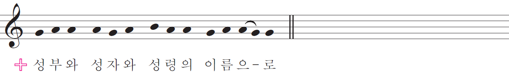
성부와 성자와 성령의 이름으로.
교우들은 응답한다.
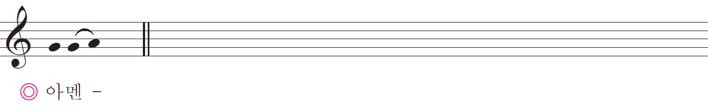
아멘.
인사
2.
이어서 사제는 팔을 벌리며 교우들에게 인사한다.
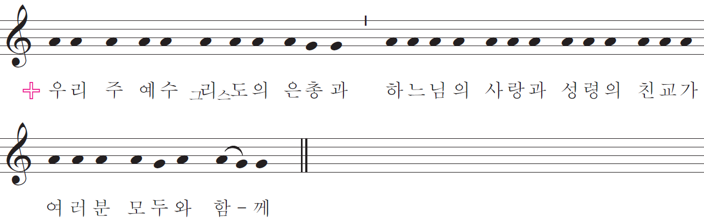
우리 주 예수 그리스도의 은총과 하느님의 사랑과 성령의 친교가 여러분 모두와 함께.
또는
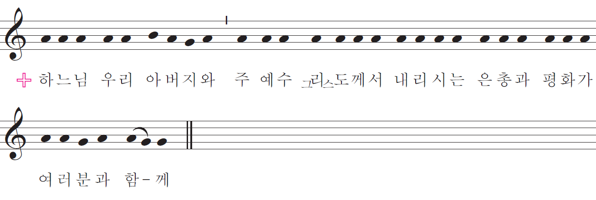
하느님 우리 아버지와 주 예수 그리스도께서 내리시는 은총과 평화가 여러분과 함께.
또는
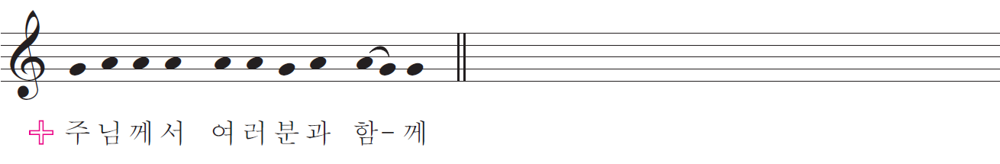
주님께서 여러분과 함께.
교우들은 응답한다.
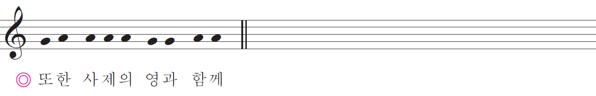
또한 사제의 영과 함께.
주교는 주님께서 여러분과 함께. 대신에 첫인사로 이렇게 말한다.
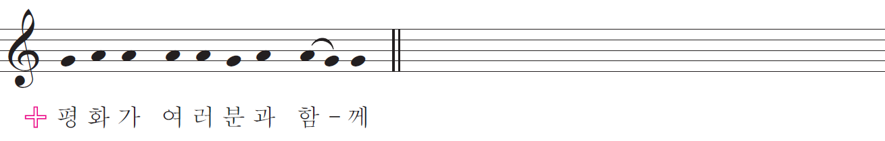
평화가 여러분과 함께.
3.
사제나 부제 또는 다른 봉사자는 그날 미사의 뜻을 신자들에게 짤막하게 풀이할 수 있다.
참회*
*
주일, 특히 부활 시기 주일 미사에서는 보통으로 하는 참회 예식 대신에 세례를 기억하는 성수 예식을 할 수 있다.
4.
그다음에 참회 예식이 이어진다. 사제는 신자들을 참회하도록 이끈다.
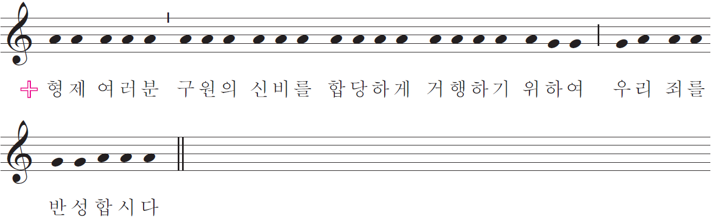
형제 여러분, 구원의 신비를 합당하게 거행하기 위하여 우리 죄를 반성합시다.
잠깐 침묵한다. 그다음에 모두 함께 고백 기도를 바친다.
전능하신 하느님과
형제들에게 고백하오니 생각과 말과 행위로 죄를 많이 지었으며 자주 의무를 소홀히 하였나이다.
가슴을 치며 말한다.
제 탓이요, 제 탓이요, 저의 큰 탓이옵니다.
이어서 계속한다.
그러므로 간절히 바라오니 평생 동정이신 성모 마리아와 모든 천사와 성인과 형제들은 저를 위하여 하느님께 빌어 주소서.
사제의 사죄가 이어진다.
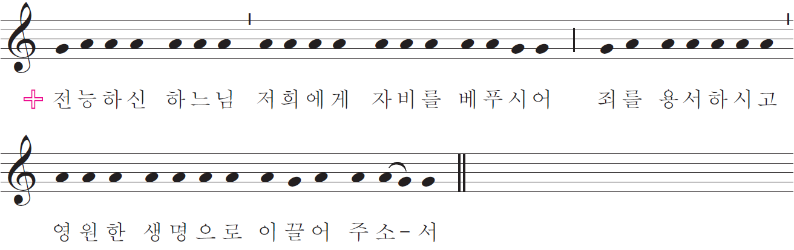
전능하신 하느님, 저희에게 자비를 베푸시어 죄를 용서하시고 영원한 생명으로 이끌어 주소서.
교우들은 응답한다.
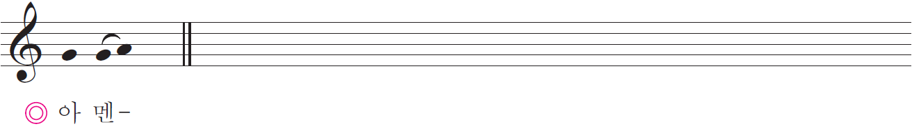
아멘.
또는
5.
사제는 신자들을 참회하도록 이끈다.
형제 여러분, 구원의 신비를 합당하게 거행하기 위하여 우리 죄를 반성합시다.
잠깐 침묵한다. 그다음에 사제는 기도한다.
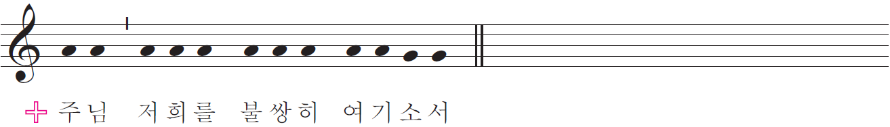
주님, 저희를 불쌍히 여기소서.
교우들은 응답한다.
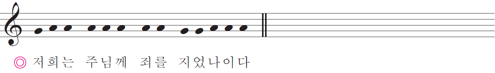
저희는 주님께 죄를 지었나이다.
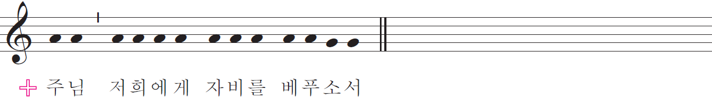
주님, 저희에게 자비를 베푸소서.
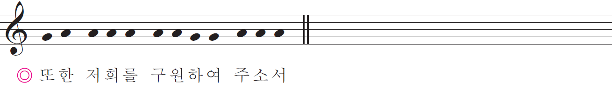
또한 저희를 구원하여 주소서.
사제의 사죄가 이어진다.
전능하신 하느님, 저희에게 자비를 베푸시어 죄를 용서하시고 영원한 생명으로 이끌어 주소서.
교우들은 응답한다.
아멘.
또는
6.
사제는 신자들을 참회하도록 이끈다.
형제 여러분, 구원의 신비를 합당하게 거행하기 위하여 우리 죄를 반성합시다.
잠깐 침묵한다. 그다음에 사제나 부제 또는 다른 봉사자가 자비송과 함께 하는 아래의 기도를 바친다. 이 기도는 그날의 전례나 축일에 맞게 바꿀 수 있다.
진심으로 뉘우치는 사람을 용서하러 오신 주님, 자비를 베푸소서.
주님, 자비를 베푸소서.
죄인을 부르러 오신 그리스도님, 자비를 베푸소서.
그리스도님, 자비를 베푸소서.
성부 오른편에 중개자로 계신 주님, 자비를 베푸소서.
주님, 자비를 베푸소서.
사제의 사죄가 이어진다.
전능하신 하느님, 저희에게 자비를 베푸시어 죄를 용서하시고 영원한 생명으로 이끌어 주소서.
교우들은 응답한다.
아멘.
자비송
7.
앞의 참회 예식에서 자비송을 바치지 않았으면 이때 바친다.
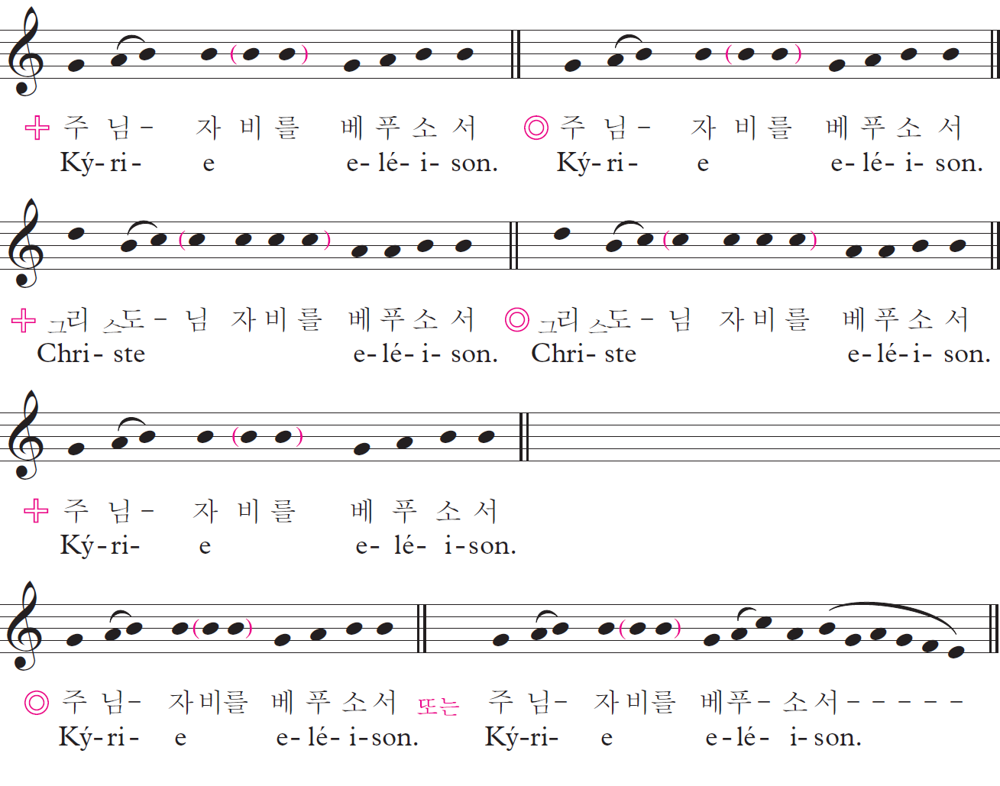
주님, 자비를 베푸소서.
주님, 자비를 베푸소서.
그리스도님, 자비를 베푸소서.
그리스도님, 자비를 베푸소서.
주님, 자비를 베푸소서.
주님, 자비를 베푸소서.
또는
키리에, 엘레이손.
키리에, 엘레이손.
크리스테, 엘레이손.
크리스테, 엘레이손.
키리에, 엘레이손.
키리에, 엘레이손.
대영광송
8.
이어서 정해진 때에는 대영광송을 노래하거나 낭송한다.
부활 시기(미사 I)
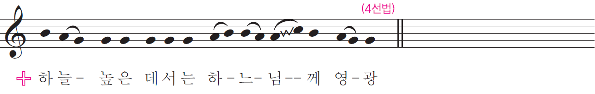
연중 주일(미사 XI)
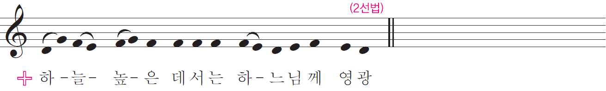
대축일과 축일(미사 VIII)
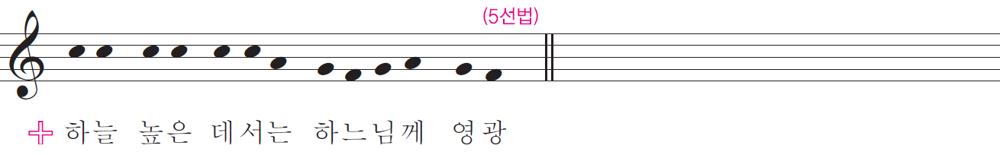
복되신 동정 마리아 축일(미사 IX)
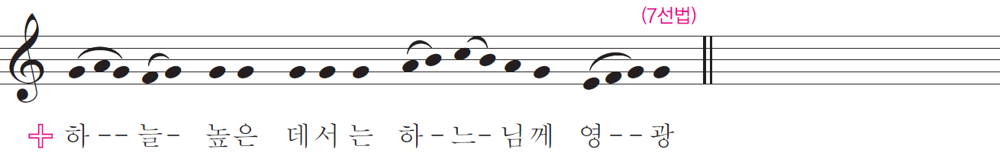
사도 축일(미사 IV)
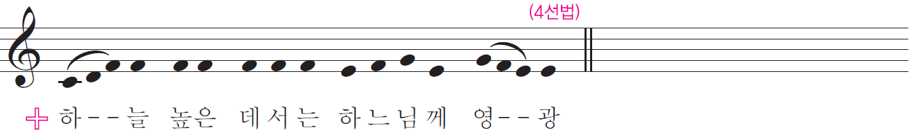
전체 악보는 『로마 미사 성가집』에 있다.
하늘 높은 데서는 하느님께 영광.
땅에서는 주님께서 사랑하시는 사람들에게 평화.
주 하느님, 하늘의 임금님
전능하신 아버지 하느님
주님을 기리나이다, 찬미하나이다.
주님을 흠숭하나이다, 찬양하나이다.
주님 영광 크시오니 감사하나이다.
외아들 주 예수 그리스도님
주 하느님, 성부의 아드님
하느님의 어린양
세상의 죄를 없애시는 주님, 저희에게 자비를 베푸소서.
세상의 죄를 없애시는 주님, 저희의 기도를 들어주소서.
성부 오른편에 앉아 계신 주님, 저희에게 자비를 베푸소서.
홀로 거룩하시고, 홀로 주님이시며, 홀로 높으신 예수 그리스도님 성령과 함께 아버지 하느님의 영광 안에 계시나이다. 아멘.
본기도
9.
대영광송이 끝나면 사제는 손을 모으고 말한다.
기도합시다.
모두 사제와 함께 잠깐 침묵하며 기도한다.
이어서 사제는 팔을 벌리고 본기도를 바친다. 기도가 끝나면 교우들은 환호한다.
아멘.
제1독서
10.
이어서 독서자는 독서대로 가서 제1독서를 봉독한다. 모두 앉아서 경건히 듣는다. 봉독 끝에 독서자는 아래와 같이 환호한다.
주님의 말씀입니다.
모두 응답한다.
하느님, 감사합니다.
화답송
11.
시편 담당자나 선창자는 시편을 노래하거나 낭송하며, 교우들은 후렴으로 응답한다.
제2독서
12.
제2독서가 있을 때에는 독서자가 독서대로 가서 제1독서 때와 같이 봉독한다. 봉독 끝에 독서자는 아래와 같이 환호한다.
주님의 말씀입니다.
모두 응답한다.
하느님, 감사합니다.
복음 환호송
13.
이어서 전례 시기가 요구하는 대로, 예식 규정에 따라 알렐루야나 복음 전 노래를 한다. 알렐루야를 하지 않는 시기에는 아래의 환호 가운데 하나를 할 수 있다.
그리스도님, 찬미와 영광 받으소서.
또는
말씀이신 그리스도님, 찬미받으소서.
또는
길이요 진리요 생명이신 그리스도님, 찬미받으소서.
14.
향을 쓸 때에는 그동안에 사제가 향로에 향을 넣는다. 그다음에 복음을 봉독할 부제는 사제 앞에 나아가 깊은 절을 하고 조용히 축복을 청한다.
축복하여 주십시오.
사제는 조용히 말한다.
주님께서 그대의 마음과 입술에 머무시어 그대가 복음을 합당하고 충실하게 선포하기를 빕니다. 성부와 ✠ 성자와 성령의 이름으로.
부제는 십자 성호를 그으며 응답한다.
아멘.
부제가 없으면, 사제가 제대에서 허리를 굽히고 속으로 기도한다.
전능하신 하느님, 제 마음과 입술을 깨끗하게 하시어 합당하게 주님의 복음을 선포하게 하소서.
복음
15.
그다음에 부제나 사제는, 경우에 따라 향로와 촛불을 든 봉사자들과 함께 독서대로 가서 말한다.
주님께서 여러분과 함께.
교우들은 응답한다.
또한 사제(부제)의 영과 함께.
부제 또는 사제가 말한다.
( )가(이) 전한 거룩한 복음입니다.
이렇게 말하며 책과 이마와 입술과 가슴에 십자 표시를 한다. 다른 모든 이도 이마와 입술과 가슴에 십자 표시를 한다.
교우들은 환호한다.
주님, 영광받으소서.
향을 쓸 때에는 부제나 사제가 이때 책에 분향하고 복음을 선포한다.
16.
복음 봉독 끝에 부제나 사제가 환호한다.
주님의 말씀입니다.
모두 응답한다.
그리스도님, 찬미합니다.
이어서 부제나 사제는 책에 고개를 숙여 경건하게 절하면서 속으로 말한다.
이 복음의 말씀으로 저희 죄를 씻어 주소서.
강론
17.
이어서 강론을 한다. 사제나 부제는 모든 주일과 의무 축일에 강론을 해야 한다. 다른 날에도 강론하는 것이 바람직하다.
신앙 고백
18.
강론이 끝나면, 규정에 따라 신앙 고백 곧 신경을 노래하거나 낭송한다.
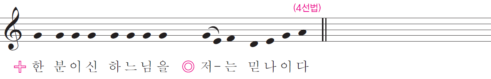
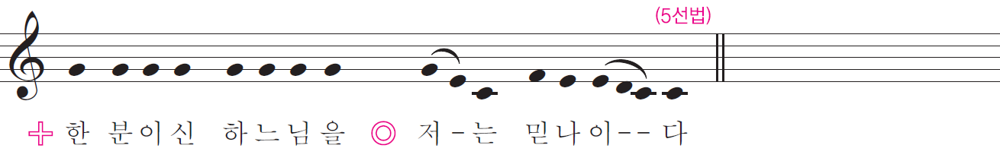
전체 악보는 『로마 미사 성가집』에 있다.
한 분이신 하느님을
저는 믿나이다. 전능하신 아버지, 하늘과 땅과 유형무형한 만물의 창조주를 믿나이다. 또한 한 분이신 주 예수 그리스도, 하느님의 외아들 영원으로부터 성부에게서 나신 분을 믿나이다. 하느님에게서 나신 하느님, 빛에서 나신 빛 참하느님에게서 나신 참하느님으로서, 창조되지 않고 나시어 성부와 한 본체로서 만물을 창조하셨음을 믿나이다. 성자께서는 저희 인간을 위하여, 저희 구원을 위하여 하늘에서 내려오셨음을 믿나이다.
밑줄 부분에서 모두 깊은 절을 한다.
또한 성령으로 인하여 동정 마리아에게서 육신을 취하시어 사람이 되셨음을 믿나이다. 본시오 빌라도 통치 아래서 저희를 위하여 십자가에 못 박혀 수난하고 묻히셨으며 성서 말씀대로 사흗날에 부활하시어 하늘에 올라 성부 오른편에 앉아 계심을 믿나이다. 그분께서는 산 이와 죽은 이를 심판하러 영광 속에 다시 오시리니 그분의 나라는 끝이 없으리이다. 또한 주님이시며 생명을 주시는 성령을 믿나이다. 성령께서는 성부와 성자에게서 발하시고 성부와 성자와 더불어 영광과 흠숭을 받으시며 예언자들을 통하여 말씀하셨나이다. 하나이고 거룩하고 보편되며 사도로부터 이어 오는 교회를 믿나이다. 죄를 씻는 유일한 세례를 믿으며 죽은 이들의 부활과 내세의 삶을 기다리나이다. 아멘.
19.
니케아-콘스탄티노폴리스 신경 대신에, 특히 사순 시기와 부활 시기에는, 이른바 사도 신경 곧 로마 교회의 세례 신경을 바칠 수 있다.
전능하신 천주 성부
천지의 창조주를 저는 믿나이다. 그 외아들 우리 주 예수 그리스도님
밑줄 부분에서 모두 깊은 절을 한다.
성령으로 인하여 동정 마리아께 잉태되어 나시고 본시오 빌라도 통치 아래서 고난을 받으시고 십자가에 못 박혀 돌아가시고 묻히셨으며 저승에 가시어 사흗날에 죽은 이들 가운데서 부활하시고 하늘에 올라 전능하신 천주 성부 오른편에 앉으시며 그리로부터 산 이와 죽은 이를 심판하러 오시리라 믿나이다. 성령을 믿으며 거룩하고 보편된 교회와 모든 성인의 통공을 믿으며 죄의 용서와 육신의 부활을 믿으며 영원한 삶을 믿나이다. 아멘.
보편 지향 기도
20.
그다음에 보편 지향 기도 곧 신자들의 기도를 바친다.
제대와 예물 준비
21.
신경과 보편 지향 기도가 끝나면, 봉헌 노래를 시작한다. 그동안 봉사자들은 성체포, 성작 수건, 성작, 성작 덮개, 미사 경본을 제대 위에 놓는다.
22.
신자들은 미사 거행에 필요한 빵과 포도주를 봉헌하며 가난한 이들을 돕고 교회에 필요한 예물도 바치는 것이 좋다. 이렇게 신자들은 봉헌에 참여한다.
예물 준비 기도
23.
사제는 제대에 가서 빵이 담긴 성반을 두 손으로 제대 위에 조금 높이 받쳐 들고 조용히 기도한다.
온 누리의 주 하느님, 찬미받으소서. 주님의 너그러우신 은혜로 저희가 땅을 일구어 얻은 이 빵을 주님께 바치오니 생명의 양식이 되게 하소서.
사제는 빵이 담긴 성반을 성체포 위에 내려놓는다.
봉헌 노래를 부르지 않는다면 사제는 이 기도를 큰 목소리로 바칠 수 있다. 그 끝에 교우들은 환호할 수 있다.
하느님, 길이 찬미받으소서.
24.
부제나 사제는 성작에 포도주를 붓고 물을 조금 따르면서 속으로 기도한다.
이 물과 술이 하나 되듯이 인성을 취하신 그리스도의 신성에 저희도 참여하게 하소서.
25.
이어서 사제는 두 손으로 성작을 제대 위에 조금 높이 받쳐 들고 조용히 기도한다.
온 누리의 주 하느님, 찬미받으소서. 주님의 너그러우신 은혜로 저희가 포도를 가꾸어 얻은 이 술을 주님께 바치오니 구원의 음료가 되게 하소서.
사제는 성작을 성체포 위에 내려놓는다.
봉헌 노래를 부르지 않는다면 사제는 이 기도를 큰 목소리로 바칠 수 있다. 그 끝에 교우들은 환호할 수 있다.
하느님, 길이 찬미받으소서.
26.
그다음에 사제는 허리를 굽히고 속으로 기도한다.
주 하느님, 진심으로 뉘우치는 저희를 굽어보시어 오늘 저희가 바치는 이 제사를 너그러이 받아들이소서.
27.
경우에 따라 사제는 예물과 십자가와 제대에 분향한다. 그다음에 부제나 다른 봉사자가 사제와 교우들에게 분향한다.
28.
이어서 사제는 제대 한쪽으로 가서 손을 씻으며 속으로 기도한다.
주님, 제 허물을 말끔히 씻어 주시고 제 잘못을 깨끗이 없애 주소서.
29.
사제는 제대 한가운데로 가서 교우들을 바라보고 팔을 벌렸다 모으면서 말한다.
형제 여러분, 우리가 바치는 이 제사를 전능하신 하느님 아버지께서 기꺼이 받아 주시도록 기도합시다.
교우들은 일어서서 응답한다.
사제의 손으로 바치는 이 제사가 주님의 이름에는 찬미와 영광이 되고 저희와 온 교회에는 도움이 되게 하소서.
예물 기도
30.
이어서 사제는 팔을 벌리고 예물 기도를 바치며, 기도가 끝나면 교우들은 환호한다.
아멘.
감사송
31.
그다음에 사제는 감사 기도를 시작한다.
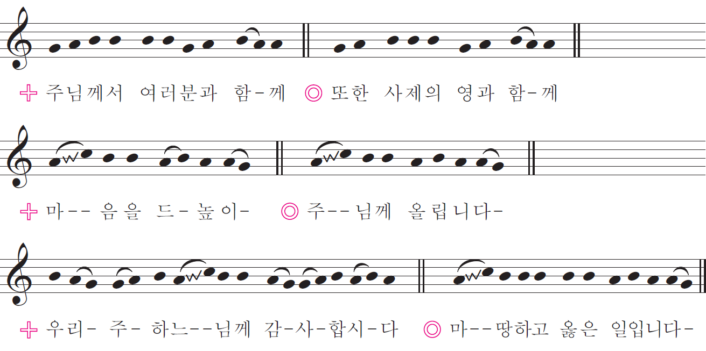
사제는 팔을 벌리며 말한다.
주님께서 여러분과 함께.
또한 사제의 영과 함께.
사제는 손을 올리며 말한다.
마음을 드높이.
주님께 올립니다.
사제는 팔을 벌리고 계속한다.
우리 주 하느님께 감사합시다.
마땅하고 옳은 일입니다.
사제는 팔을 벌리고 감사송을 계속한다.
거룩하시도다
사제는 감사송 끝에 손을 모으고, 교우들과 함께 거룩하시도다를 노래하거나 분명한 목소리로 낭송하며 감사송을 마친다.
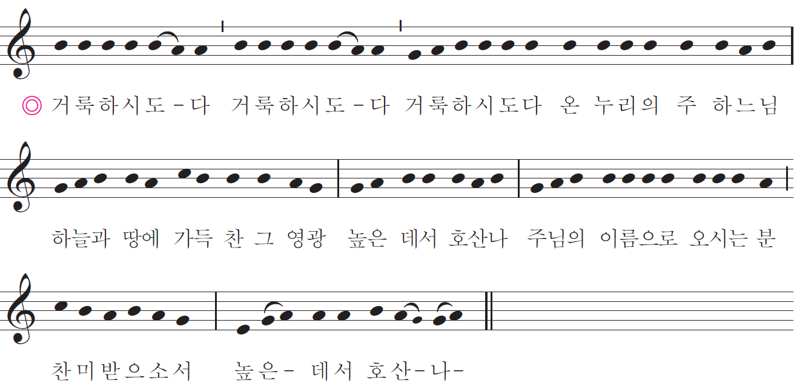
거룩하시도다! 거룩하시도다! 거룩하시도다! 온 누리의 주 하느님! 하늘과 땅에 가득 찬 그 영광! 높은 데서 호산나! 주님의 이름으로 오시는 분, 찬미받으소서. 높은 데서 호산나!
32.
모든 미사에서 주례 사제는 특히 감사 기도의 주요 부분을 노래할 수 있다. 감사 기도 제1양식(로마 전문)에서 ( ) 안의 말은 생략할 수 있다.
감사기도 제1양식
감사기도 제2양식
감사기도 제3양식
감사기도 제4양식
감사 기도 제1양식 (로마 전문)
83.
주님께서 여러분과 함께.
또한 사제의 영과 함께.
마음을 드높이.
주님께 올립니다.
우리 주 하느님께 감사합시다.
마땅하고 옳은 일입니다.
예식 규정에 따라 바쳐야 할 감사송이 이어진다. 감사송은 아래와 같이 끝맺는다.
거룩하시도다! 거룩하시도다! 거룩하시도다! 온 누리의 주 하느님! 하늘과 땅에 가득 찬 그 영광! 높은 데서 호산나! 주님의 이름으로 오시는 분, 찬미받으소서. 높은 데서 호산나!
84.
사제는 팔을 벌리고 기도한다.
주례 사제
인자하신 아버지, 성자 우리 주 예수 그리스도를 통하여 간절히 청하오니
사제는 손을 모으고 기도하며, 빵과 성작 위에 십자 표시를 한 번 한다.
이 거룩하고 흠 없는 예물을 받으시고 ✠ 강복하소서.
사제는 팔을 벌리고 계속한다.
먼저 거룩하고 보편된 교회를 위하여 이 예물을 바치오니 주님의 일꾼, 교황 아무와 저희 주교 아무와* 사도로부터 이어 오는 보편 신앙을 오롯이 받드는 모든 이를 돌보시어 세상 어디서나 교회를 평화롭게 하시고 일치하게 하시며 지켜 주시고 다스리소서.
*
「로마 미사 경본 총지침」149항에 따라 부교구장 주교와 보좌 주교도 기억할 수 있다. 주교가 여럿일 때는 저희 주교 아무와 협력 주교들과로 한다.
85.
산 이를 기억한다.
첫째 사제
주님, 주님의 종 아무와 아무를 생각하소서.
사제는 손을 모으고 지향에 따라 잠깐 속으로 기도한다. 그다음에 팔을 벌리고 계속한다.
아울러, 주님께서 여기 모인 모든 이의 믿음과 정성을 아시오니 이들도 굽어보소서. 저희는 이들을 위하여 찬미의 제사를 바치나이다. 이들도 자신과 일가친척과 친지들이 안전하게 구원되기를 바라는 마음으로 정성을 모아 영원하시며 살아 계신 참하느님께 이 찬미의 제사를 바치나이다.
86.
성인들을 기억하며
둘째 사제
저희는 온 교회와 일치하여 우리 주 천주 예수 그리스도의 어머니이시며 영광스러운 평생 동정이신 마리아를 비롯하여
† 그 배필이신 성 요셉과 사도들과 순교자들 베드로와 바오로, 안드레아와 (야고보, 요한과 토마스, 야고보와 필립보 바르톨로메오와 마태오, 시몬과 타대오 리노와 클레토, 클레멘스와 식스토 고르넬리오와 치프리아노, 라우렌시오와 크리소고노 요한과 바오로, 고스마와 다미아노) 그 밖의 모든 성인을 생각하며 공경하오니 그들의 공로와 기도를 보시어 모든 일에서 저희를 도우시고 보호하소서. (우리 주 그리스도를 통하여 비나이다. 아멘.)
고유 성인 기도
주님 성탄 대축일과 성탄 팔일 축제
저희는 온 교회와 일치하여 복되신 마리아께서 동정의 순결한 몸으로 이 세상에 구세주를 낳아 주신 이 거룩한 밤(날)을 경축하나이다. 우리 주 천주 예수 그리스도의 어머니이시며 영광스러운 평생 동정이신 마리아를 비롯하여 †
주님 공현 대축일
저희는 온 교회와 일치하여 아버지의 영광을 영원히 함께 누리시는 외아들 그리스도께서 저희와 같은 인간의 몸으로 나타나신 이 거룩한 날을 경축하나이다. 우리 주 천주 예수 그리스도의 어머니이시며 영광스러운 평생 동정이신 마리아를 비롯하여 †
파스카 성야부터 부활 제2주일까지
저희는 온 교회와 일치하여 이 거룩한 밤(날)을 경축하나이다. 이 거룩한 날을 경축하나이다. 우리 주 천주 예수 그리스도의 어머니이시며 영광스러운 평생 동정이신 마리아를 비롯하여 †
주님 승천 대축일
저희는 온 교회와 일치하여 저희의 연약한 육신을 취하신 성자 우리 주님께서 성부 오른편에 앉으신 이 거룩한 날을 경축하나이다. 우리 주 천주 예수 그리스도의 어머니이시며 영광스러운 평생 동정이신 마리아를 비롯하여 †
성령 강림 대축일
저희는 온 교회와 일치하여 성령께서 사도들에게 혀 모양의 불길로 나타나신 이 거룩한 날을 경축하나이다. 우리 주 천주 예수 그리스도의 어머니이시며 영광스러운 평생 동정이신 마리아를 비롯하여 †
87.
사제는 팔을 벌리고 계속한다.
주례 사제
주님, 저희 봉사자들과 온 가족이 바치는 이 예물을 기꺼이 받아들이소서. 저희를 한평생 평화롭게 하시며 영원한 벌을 면하고 뽑힌 이들의 무리에 들게 하소서.
사제는 손을 모은다.
(우리 주 그리스도를 통하여 비나이다. 아멘.)
파스카 성야부터 부활 제2주일까지
주님, 물과 성령으로 모든 죄를 용서하시고 새로 나게 하신 형제들을 위하여 저희 봉사자들과 온 가족이 바치는 이 예물을 기꺼이 받아들이소서. 저희를 한평생 평화롭게 하시며 영원한 벌을 면하고 뽑힌 이들의 무리에 들게 하소서.
사제는 손을 모은다.
(우리 주 그리스도를 통하여 비나이다. 아멘.)
88.
사제는 두 손을 예물 위에 펴 얹고 기도한다.
(모든 사제)
주 하느님, 이 예물을 너그러이 받아들이고 강복하시어 참되고 완전하며 합당한 제물 사랑하시는 성자 우리 주 예수 그리스도의 몸과 피가 되게 하소서.
사제는 손을 모은다.
89.
아래의 기도문에서 주님의 말씀은 마디마다 또렷하게 발음한다.
예수님께서는 수난 전날
사제는 제대 위에서 빵을 조금 들어 올리고 계속한다.
거룩하신 손에 빵을 드시고
사제는 위를 본다.
하늘을 우러러 전능하신 아버지께 감사를 드리며 축복하시고 쪼개어 제자들에게 주시며 말씀하셨나이다.
사제는 허리를 조금 굽힌다.
너희는 모두 이것을 받아 먹어라. 이는 너희를 위하여 내어 줄 내 몸이다.
사제는 축성된 빵을 받들어 교우들에게 보이고 성반에 내려놓은 다음, 깊은 절을 한다.
90.
이어서 계속한다.
저녁을 잡수시고 같은 모양으로
사제는 제대 위에서 성작을 조금 들어 올리고 계속한다.
거룩하신 손에 이 귀중한 잔을 드시고 다시 감사를 드리며 축복하신 다음 제자들에게 주시며 말씀하셨나이다.
사제는 허리를 조금 굽힌다.
너희는 모두 이것을 받아 마셔라. 이는 새롭고 영원한 계약을 맺는 내 피의 잔이니 죄를 사하여 주려고 너희와 많은 이를 위하여 흘릴 피다. 너희는 나를 기억하여 이를 행하여라.
사제는 성작을 받들어 교우들에게 보이고 성체포 위에 내려놓은 다음, 깊은 절을 한다.
91.
이어서 말한다.
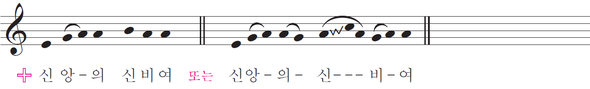
신앙의 신비여!
교우들은 뒤따라 환호한다.
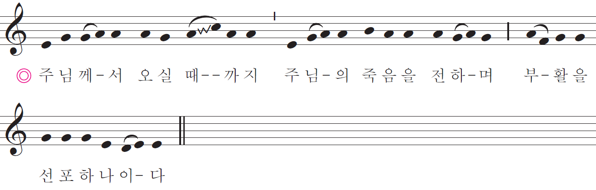
주님께서 오실 때까지 주님의 죽음을 전하며 부활을 선포하나이다.
또는
주님께서 오실 때까지 이 빵을 먹고 이 잔을 마실 적마다 주님의 죽음을 전하나이다.
또는
십자가와 부활로 저희를 구원하신 주님, 길이 영광받으소서.
92.
사제는 팔을 벌리고 기도한다.
주님, 저희 봉사자들과 주님의 거룩한 백성은 성자 우리 주 그리스도의 복된 수난과 죽음을 이기신 부활과 영광스러운 승천을 기념하나이다. 저희는 아버지께서 베풀어 주신 선물 가운데서 이 깨끗한 제물, 거룩한 제물, 흠 없는 제물 영원한 생명의 빵과 구원의 잔을 존엄한 대전에 봉헌하나이다.
93.
이 제물을 인자로이 굽어보시고 일찍이 주님의 의로운 종 아벨의 제물과 저희 조상 아브라함의 제사와 대사제 멜키체덱이 바친 거룩하고 흠 없는 제물을 받아 주셨듯이 이를 받아들이소서.
94.
사제는 허리를 굽히고 손을 모아 계속한다.
전능하신 아버지, 간절히 청하오니 거룩한 천사의 손으로 이 제물이 존엄한 천상 제단에 오르게 하소서. 그리하여 이 제단에서 성자의 거룩한 몸과 피를 받아 모실 때마다.
사제는 몸을 바로 하고 십자 성호를 그으면서 말한다.
하늘의 온갖 은총과 복을 가득히 내려 주소서.
사제는 손을 모은다.
(우리 주 그리스도를 통하여 비나이다. 아멘.)
95.
죽은 이를 기억한다.
사제는 팔을 벌리고 기도한다.
셋째 사제
주님, 신앙의 표를 지니고 저희보다 먼저 평안히 잠든 주님의 종 아무와 아무를 생각하소서.
사제는 손을 모으고 지향에 따라, 죽은 이를 위하여 잠깐 속으로 기도한다. 그다음에 팔을 벌리고 계속한다.
주님, 간구하오니 그들과 그리스도 안에 쉬는 모든 이를 행복과 광명과 평화의 나라로 인도하소서.
사제는 손을 모은다.
(우리 주 그리스도를 통하여 비나이다. 아멘.)
96.
사제는 오른손으로 가슴을 치면서 기도한다.
넷째 사제
주님의 끝없는 자비를 바라는 주님의 종인 저희 죄인들도
사제는 팔을 벌리고 계속한다.
거룩한 사도들과 순교자들 요한과 스테파노, 마티아와 바르나바 (이냐시오와 알렉산데르, 마르첼리노와 베드로 펠리치타와 페르페투아, 아가타와 루치아 아녜스와 체칠리아, 아나스타시아와) 그 밖의 모든 성인과 더불어 살게 하시며 저희의 공과 덕이 부족하오나 용서를 베푸시어 그들 무리에 들게 하소서.
97.
사제는 손을 모으고 계속한다.
주례 사제
아버지께서는 그리스도를 통하여 언제나 온갖 좋은 것을 창조하시고 거룩하게 하시며 생명을 주고 강복하시어 저희에게 베풀어 주시나이다.
98.
사제는 성반과 성작을 받들어 올리고 계속한다.
(모든 사제)
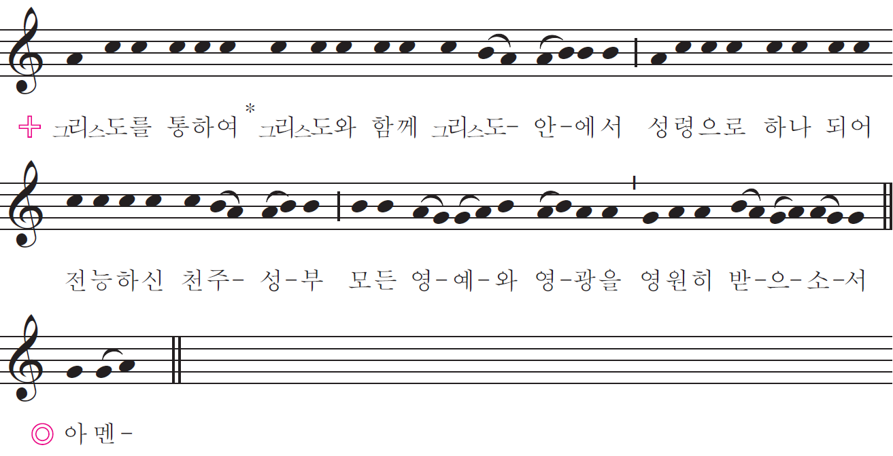
그리스도를 통하여 그리스도와 함께 그리스도 안에서 성령으로 하나 되어 전능하신 천주 성부 모든 영예와 영광을 영원히 받으소서.
교우들은 환호한다.
아멘.
그다음에 영성체 예식이 이어진다.
주님의 기도
124.
사제는 성작과 성반을 내려놓은 뒤, 손을 모으고 말한다.
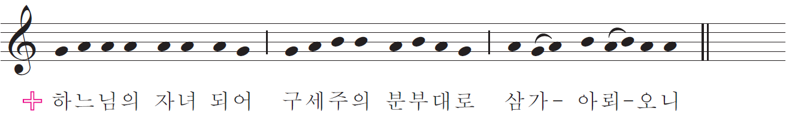
하느님의 자녀 되어, 구세주의 분부대로 삼가 아뢰오니
사제는 팔을 벌리고 교우들과 함께 기도한다.
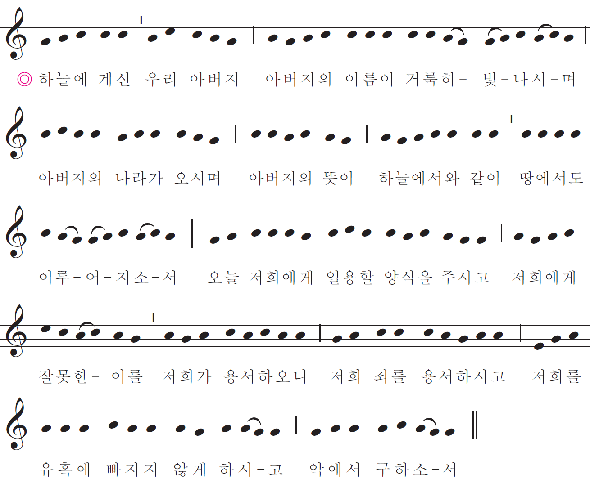
하늘에 계신 우리 아버지, 아버지의 이름이 거룩히 빛나시며 아버지의 나라가 오시며 아버지의 뜻이 하늘에서와 같이 땅에서도 이루어지소서! 오늘 저희에게 일용할 양식을 주시고 저희에게 잘못한 이를 저희가 용서하오니 저희 죄를 용서하시고 저희를 유혹에 빠지지 않게 하시고 악에서 구하소서.
125.
사제는 팔을 벌린 채 혼자서 계속하여 기도한다.
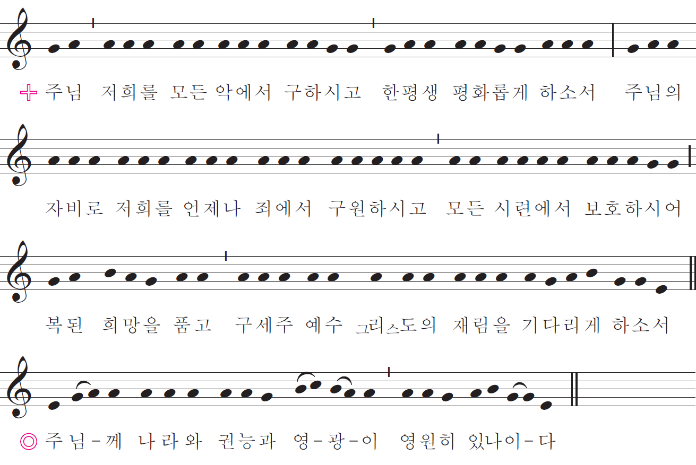
주님, 저희를 모든 악에서 구하시고 한평생 평화롭게 하소서. 주님의 자비로 저희를 언제나 죄에서 구원하시고 모든 시련에서 보호하시어 복된 희망을 품고 구세주 예수 그리스도의 재림을 기다리게 하소서.
사제는 손을 모은다.
교우들은 아래의 환호로 기도를 끝맺는다.
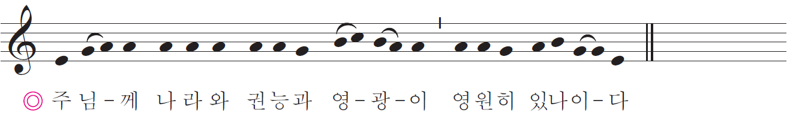
주님께 나라와 권능과 영광이 영원히 있나이다.
평화 예식
126.
그다음에 사제는 팔을 벌리고 분명한 목소리로 기도한다.
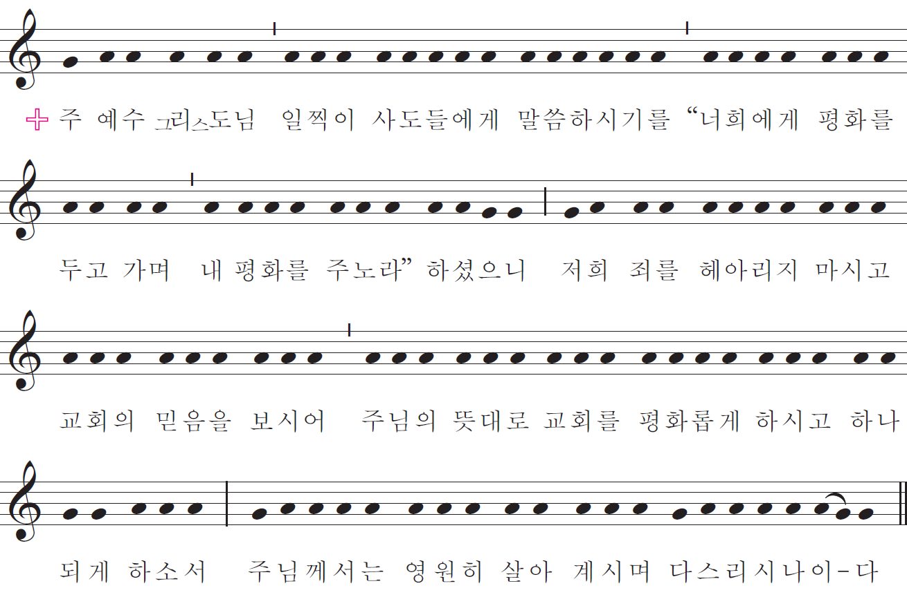
주 예수 그리스도님, 일찍이 사도들에게 말씀하시기를 “너희에게 평화를 두고 가며 내 평화를 주노라.” 하셨으니 저희 죄를 헤아리지 마시고 교회의 믿음을 보시어 주님의 뜻대로 교회를 평화롭게 하시고 하나 되게 하소서.
사제는 손을 모은다.
주님께서는 영원히 살아 계시며 다스리시나이다.
교우들은 응답한다.
아멘.
127.
사제는 교우들을 향하여 팔을 벌렸다 모으면서 말한다.
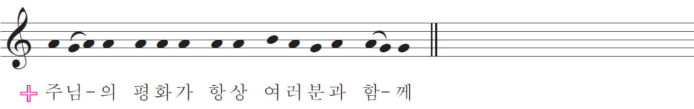
주님의 평화가 항상 여러분과 함께.
교우들은 응답한다.
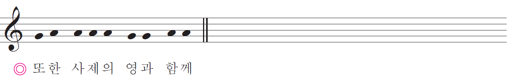
또한 사제의 영과 함께.
128.
이어서 경우에 따라 부제나 사제는 말한다.
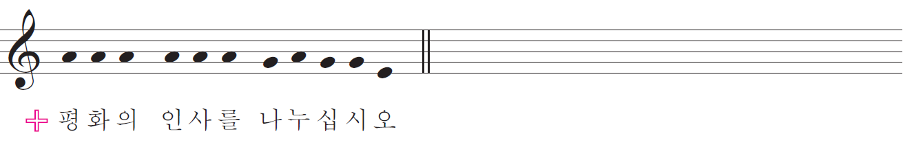
평화의 인사를 나누십시오.
모든 이는 가벼운 절을 하며 서로 평화와 친교와 사랑의 인사를 나눈다. 사제는 부제나 봉사자에게 평화의 인사를 한다.
평화를 빕니다.
빵 나눔
129.
그다음에 사제는 축성된 빵을 들어 성반에서 쪼개고, 작은 조각을 떼어 성작 안에 넣으며 속으로 기도한다.
여기 하나 되는 주 예수 그리스도의 몸과 피가 이를 받아 모시는 저희에게 영원한 생명이 되게 하소서.
하느님의 어린양
130.
그동안 아래 기도를 노래하거나 낭송한다.
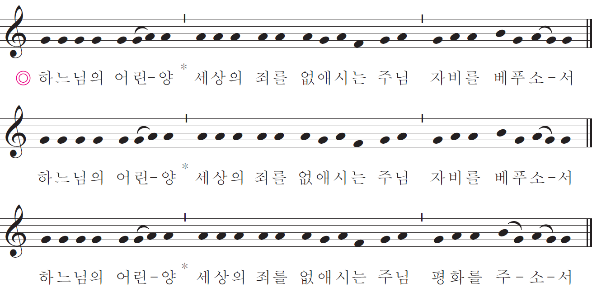
하느님의 어린양, 세상의 죄를 없애시는 주님, 자비를 베푸소서. 하느님의 어린양, 세상의 죄를 없애시는 주님, 자비를 베푸소서. 하느님의 어린양, 세상의 죄를 없애시는 주님, 평화를 주소서.
위의 기도는 축성된 빵을 쪼개는 동안 되풀이할 수 있다. 그러나 마지막에는 평화를 주소서.로 한다.
영성체 전 기도
131.
그다음에 사제는 손을 모으고 속으로 기도한다.
살아 계신 하느님의 아들 주 예수 그리스도님, 주님께서는 성부의 뜻에 따라 성령의 힘으로 죽음을 통하여 세상에 생명을 주셨나이다. 그러므로 이 지극히 거룩한 몸과 피로 모든 죄와 온갖 악에서 저를 구하소서. 그리고 언제나 계명을 지키며 주님을 결코 떠나지 말게 하소서.
또는
주 예수 그리스도님, 주님의 몸과 피를 받아 모심이 제게 심판과 책벌이 되지 않게 하시고 제 영혼과 육신을 자비로이 낫게 하시며 지켜 주소서.
영성체
132.
사제는 깊은 절을 한 다음, 성체를 성반이나 성작 위에 조금 높이 받쳐 들고, 교우들을 향하여 분명한 목소리로 말한다.
보라! 하느님의 어린양, 세상의 죄를 없애시는 분이시니 이 성찬에 초대받은 이는 복되도다.
교우들과 함께 한 번 말한다.
주님, 제 안에 주님을 모시기에 합당치 않사오나 한 말씀만 하소서. 제 영혼이 곧 나으리이다.
133.
이어서 사제는 제대를 향하여 서서 아래의 기도를 속으로 바친다.
그리스도의 몸은 저를 지켜 주시어 영원한 생명에 이르게 하소서.
사제는 그리스도의 몸을 경건하게 모신다.
이어서 성작을 잡고 아래의 기도를 속으로 바친다.
그리스도의 피는 저를 지켜 주시어 영원한 생명에 이르게 하소서.
사제는 그리스도의 피를 경건하게 모신다.
134.
그다음에 사제는 성체를 담은 성반이나 성합을 들고 영성체할 사람들에게 가서 매번 성체를 조금 들어 보이며 말한다.
그리스도의 몸.
영성체할 사람은 응답한다.
아멘.
그리고 성체를 모신다.
부제도 성체를 나누어 준다면 같은 방식으로 한다.
135.
성체와 성혈을 함께 모실 때에는 양형 영성체 규정을 따른다(「로마 미사 경본 총지침」, 284-287항).
136.
영성체 노래는 사제가 성체를 모실 때에 시작한다.
137.
성체 분배가 끝나면 사제나 부제나 시종은 성작 위에서 성반을 깨끗이 닦고 성작도 그렇게 한다. 그동안 사제는 속으로 기도한다.
주님, 저희가 모신 성체를 깨끗한 마음으로 받들게 하시고 현세의 이 선물이 영원한 생명의 약이 되게 하소서.
감사 침묵 기도
138.
영성체 후에 사제는 자리에 가 앉는다. 경우에 따라 모두 잠깐 거룩한 침묵을 지키며 기도할 수 있다. 또한 시편이나 다른 찬양 노래나 찬미가를 부를 수 있다.
영성체 후 기도
139.
그다음에 사제는 제대나 주례석에 서서 손을 모으고 교우들을 향하여 말한다.
기도합시다.
앞에서 침묵 기도를 하지 않았으면, 모두 사제와 함께 잠깐 침묵하며 기도한다. 이어서 사제는 팔을 벌리고 영성체 후 기도를 바친다. 그 끝에 교우들은 환호한다.
아멘.
140.
필요에 따라 사목 권고나 공지 사항을 짤막하게 한다.
강복
141.
그다음에 파견을 한다. 사제는 팔을 벌리고 교우들을 향하여 말한다.
주님께서 여러분과 함께.
교우들은 응답한다.
또한 사제의 영과 함께.
사제는 교우들에게 강복한다.
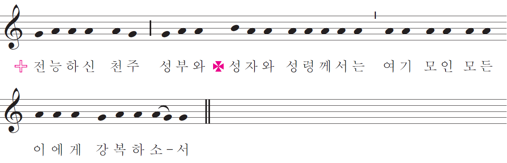
전능하신 천주 성부와 ✠ 성자와 성령께서는 여기 모인 모든 이에게 강복하소서.
교우들은 응답한다.
아멘.
142.
특별한 날이나 상황에서는 예식 규정에 따라 이 강복 대신에 장엄 강복이나 백성을 위한 기도를 할 수 있다.
143.
주교 미사에서 주례자는 주교관을 받아 쓰고, 팔을 벌리며 말한다.
모두 응답한다.
주례자는 말한다.
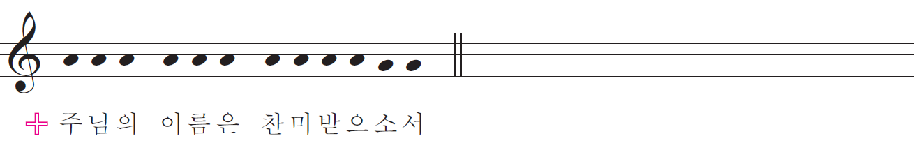
모두 응답한다.
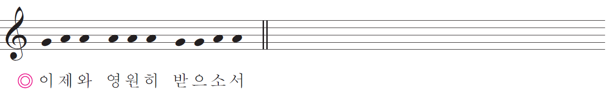
주례자는 말한다.
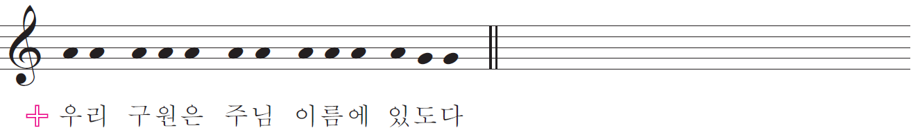
모두 응답한다.
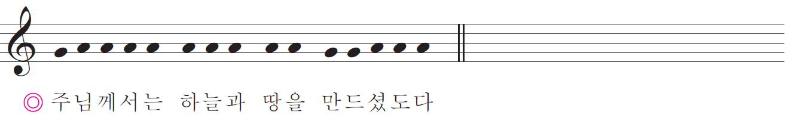
그다음에 주례자는, 목자 지팡이를 사용하였으면 지팡이를 받아 짚고, 교우들을 향하여 십자 표시를 세 번 하면서 말한다.
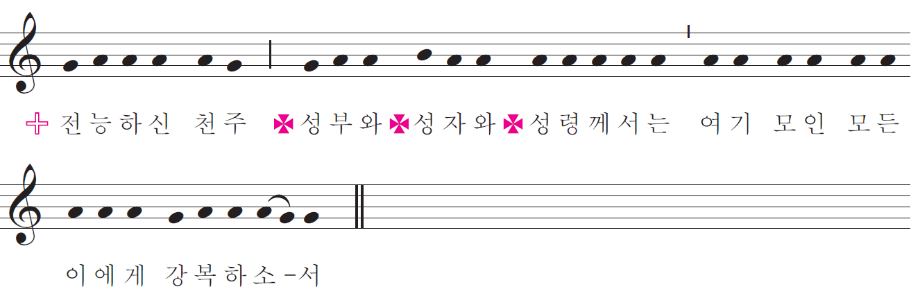
모두 응답한다.
주례자는 말한다.
주님께서 여러분과 함께.
모두 응답한다.
또한 사제의 영과 함께.
주례자는 말한다.
주님의 이름은 찬미받으소서.
모두 응답한다.
이제와 영원히 받으소서.
주례자는 말한다.
우리 구원은 주님 이름에 있도다.
모두 응답한다.
주님께서는 하늘과 땅을 만드셨도다.
그다음에 주례자는, 목자 지팡이를 사용하였으면 지팡이를 받아 짚고, 교우들을 향하여 십자 표시를 세 번 하면서 말한다.
전능하신 천주 ✠ 성부와 ✠ 성자와 ✠ 성령께서는 여기 모인 모든 이에게 강복하소서.
모두 응답한다.
아멘.
파견
144.
그다음에 부제나 사제는 손을 모으고 교우들에게 아래의 말이나 다른 알맞은 말을 한다.
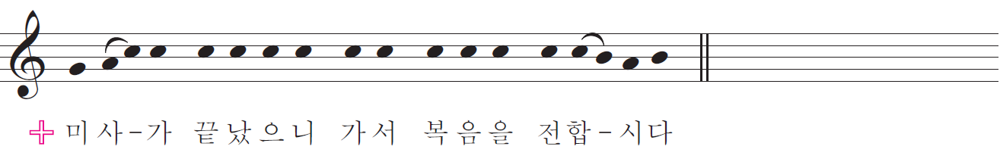
미사가 끝났으니 가서 복음을 전합시다.
또는
주님과 함께 가서 복음을 전합시다.
또는
평화로이 가서 주님을 찬양하며 삽시다.
또는
미사가 끝났으니 평화로이 가십시오.
교우들은 응답한다.
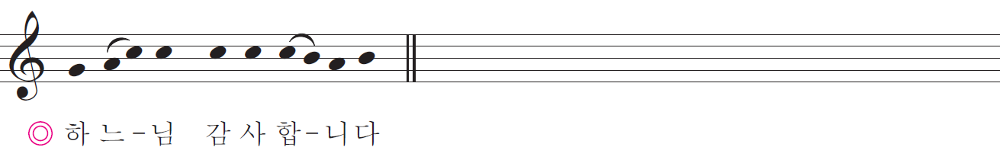
하느님, 감사합니다.
145.
사제는 입당할 때와 같이 제대에 고개를 숙여 경건하게 절한다. 그다음에 봉사자들과 함께 제대 앞에서 깊은 절을 하고 물러간다.
146.
미사 끝에 곧바로 다른 전례가 이어지면 강복과 파견 예식은 생략한다.
개발을 이어갈 기준
공통 본문은 주교회의 문서를 우선 대조하고 서울 문서는 해설·역할 표시와 제2양식의 보조 출처로 관리하는 안을 권합니다. 자동 병합은 하지 않았습니다.
비교 결과·한계출시 준비 리마인드7단계 검수 화면